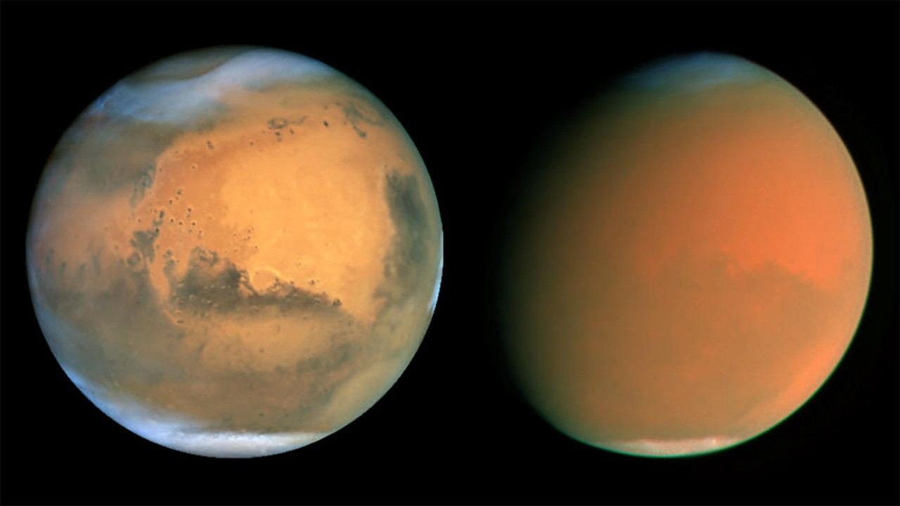
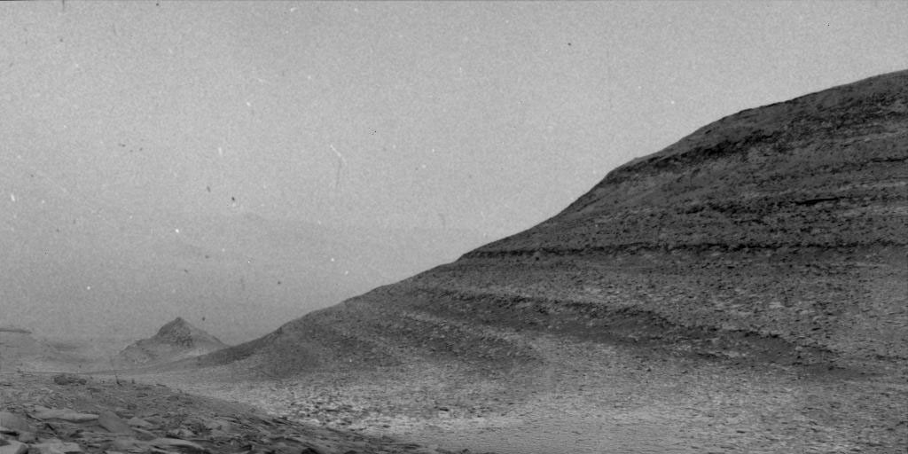
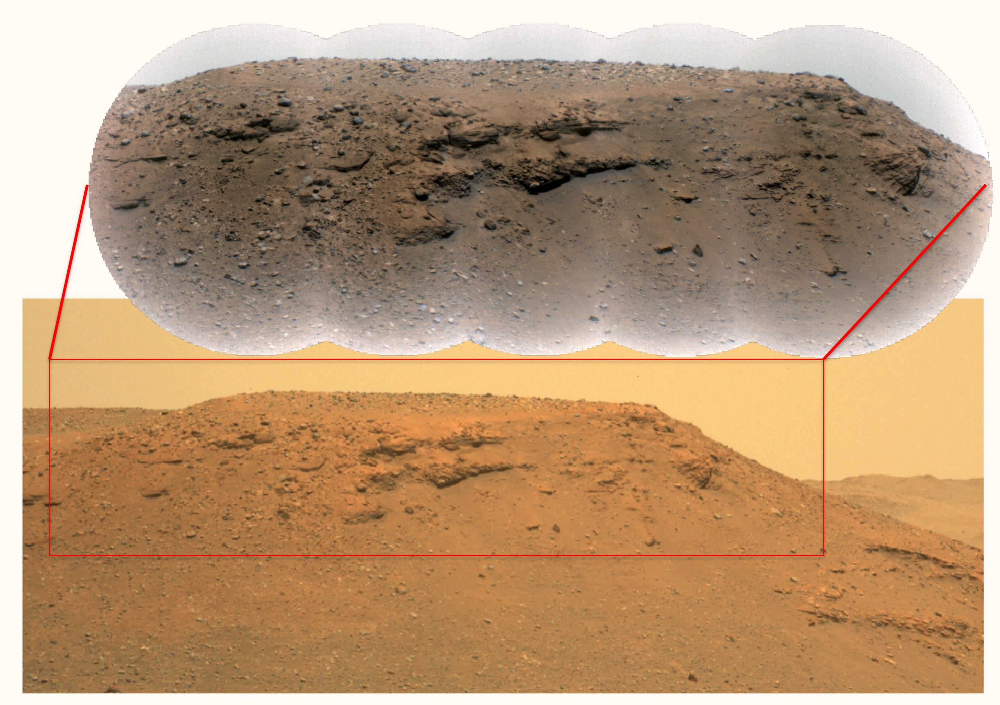
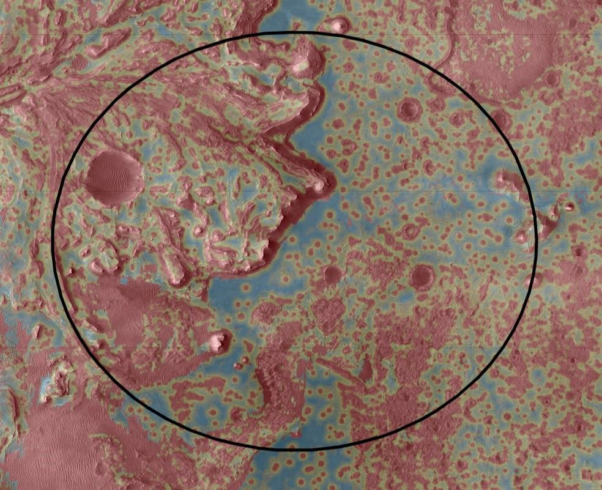
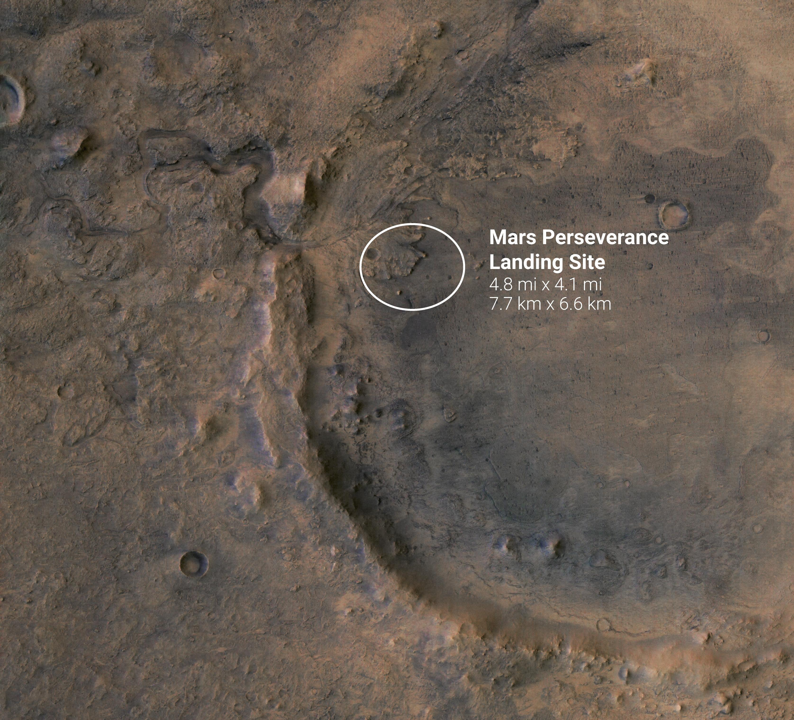
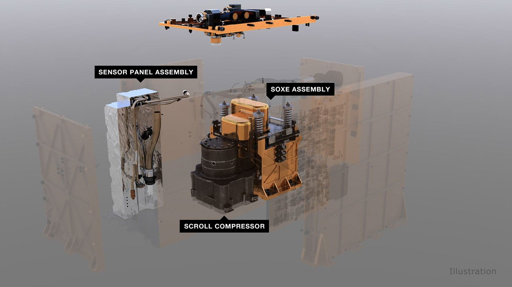
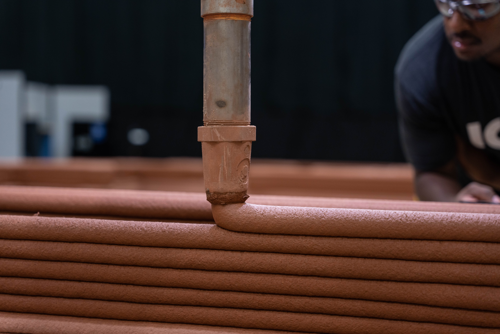
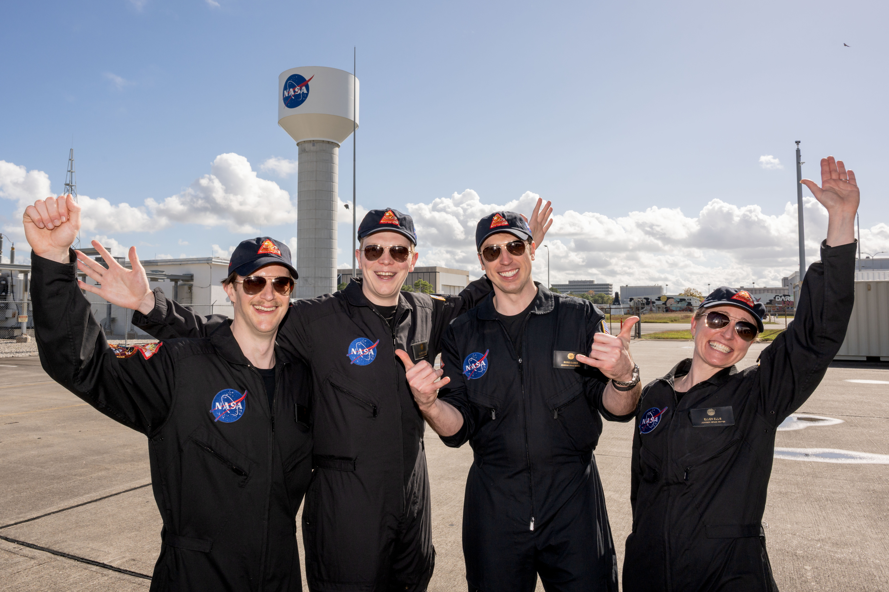

Mars – Understanding the Planet, Its Dangers and the Importance of Survival
Mars, known as the Red Planet, is one of the celestial bodies that has generated the
most
interest in space exploration due to its geological, atmospheric, and environmental
characteristics.
It is the fourth planet from the Sun and represents one of the main targets for future
human
exploration missions. However, although it shares some similarities with Earth, its
natural
conditions are extremely different and present significant challenges to survival.
(Reference: Yahoo! Noticias. (s.f.). Why is Mars red? Scientists may finally have the
answer. Yahoo! Style.)
To understand what it would be like to live on Mars, it is necessary to know its chemical
composition and internal structure, as well as its main physical characteristics. Its surface is
mainly composed of rocks, minerals, and dust rich in iron oxides, which are responsible for its
characteristic reddish color. Its atmosphere is very thin and is composed of approximately
95% carbon dioxide, in addition to nitrogen and argon, with small amounts of other gases. This
composition means that the planet does not have breathable air for humans and cannot maintain
temperatures suitable for life without technological intervention.
Furthermore, Mars presents hazardous environmental conditions, including extremely low
temperatures,
intense solar and cosmic radiation, dust storms, and atmospheric pressure far lower than
Earth's.
For these reasons, any human mission would require specialized technology to provide oxygen,
water,
food, energy, and protection. Studying these characteristics allows us to understand the
challenges
of Mars exploration and demonstrates why it is crucial to develop a survival guide that
establishes
procedures, preventative measures, and technological solutions to protect human life.
Life Support Systems and Habitat Engineering
Mars is a rocky planet that is one of the inner planets of the Solar System.
Its reddish appearance is mainly due to the presence of iron oxides in its soil and rocks.
Characteristics
Information
Position
Fourth planet from the Sun
Diameter
Approximately 6,779 km
Volume
Approximately 163 billion km³
Gravity
3.71 m/s²
Length of day
24 hours and 37 minutes
Length of year
687 Earth days
Average temperature
Approximately −63 °C
Natural satellites
Fobos and Deimos
Color
Reddish due to iron oxides
(Reference: Landau, E. (2025, 11 de septiembre). ¿Realmente hubo vida en Marte? El hallazgo
científico que ofrece nuevos indicios sobre el pasado del planeta rojo. National
Geographic.)
Life Support Systems and Habitat Engineering
Chemical Composition of Mars
Mars is composed primarily of chemical elements that form minerals, rocks, and materials
present on
its surface and in its interior.
Among its most important components are:
- Iron (Fe): present in minerals and iron oxides, responsible for its reddish color.
- Silicon (Si): a component of silicates, which make up a large portion of its rocks.
- Oxygen (O): found mainly combined with other elements in minerals and oxides.
- Magnesium (Mg): a component of various minerals present in the crust.
- Aluminum (Al): present in different minerals of Martian rocks.
- Sulfur (S): found in minerals such as sulfates.
- Composition of the Martian Atmosphere
Gas Approximate Percentage
Carbon Dioxide (CO₂) 95.3%
Nitrogen (N₂) 2.7%
Argon (Ar) 1.6%
Oxygen (O₂) 0.13%
Carbon Monoxide (CO) 0.08%
The Martian atmosphere is unbreathable for humans. Its low pressure and low oxygen
concentration
make the use of artificial life support systems essential.
(Reference:Yahoo! Style. (s. f.). Why is Mars red? Scientists were surprised to discover the
answer.)
Internal structure of Mars
Like Earth, Mars has an internal structure divided into three main regions:
1. Crust: This is the solid outer layer of the planet, made up of rocks and minerals. Its
surface
contains volcanoes, craters, mountains, and extensive plains.
2. Mantle: Located beneath the crust, it is composed mainly of rocky materials rich in
silicates and
iron and magnesium minerals.
3. Core: This is the central region of the planet, composed mainly of iron, nickel, and
light
elements such as sulfur.
This structure allows us to understand how Mars formed and how it evolved geologically over
billions
of years.
(Reference:SEIS-InSight. (s. f.). Internal models of Mars.)
Main environmental hazards of Mars
Human survival on Mars presents a challenge due to several natural conditions:
- Lack of oxygen: the atmosphere contains very little oxygen available for breathing.
- Extreme temperatures: temperatures can drop to approximately -125 °C.
- Radiation: Mars lacks a strong global magnetic field, and its thin atmosphere offers
little
protection from radiation.
- Dust storms: these can reduce visibility and damage solar panels and equipment.
- Low atmospheric pressure: this poses a danger to the unprotected human body.
- Scarcity of liquid water: although water exists, primarily in the form of ice, obtaining
and
processing it requires technology.
- Difficulty in producing food: it would be necessary to build protected facilities to
cultivate
plants.
(Reference:Català, J. A. (2025, 26 de noviembre). Detectada por primera vez actividad
eléctrica en la
atmósfera de Marte. La Vanguardia.)
Systems needed to survive on Mars
To establish a human presence on Mars, it would be necessary to develop technological systems
capable of maintaining conditions similar to those on Earth.
An astronaut suit is essential for human survival on Mars because the planet has no breathable
atmosphere and experiences extreme temperatures and dangerous radiation. It works as a small
personal
life-support system, providing oxygen, regulating body temperature, and maintaining the pressure
necessary for the human body.
The suit also protects astronauts from dust, harmful particles, and other environmental hazards
while
allowing them to move, communicate, and perform scientific activities outside their habitat. Its
gloves,
helmet, and special layers are designed to provide safety and mobility during space exploration.
(Reference:Diodati, M. (2015, 30 de noviembre). Tutti i pezzi della ISS (9/22):
Extravehicular Mobility
Unit (EMU). Medium.)
System
Function
Oxygen Support
Provide breathable air
Thermal Control
Maintain appropriate temperatures
Radiation Protection
Reduce exposure to hazardous particles
Water Supply
Obtain, purify and store water
Food Production
Grow food in controlled environments
Power Generation
Provide electricity using solar panels or other sources
Pressurized Habitats
Create safe living and working environments
Importance of a survival guide on Mars
A survival guide is essential for organizing activities nd establishing procedures to protect human
life in an environment so different from Earth.
Its importance lies in several aspects:
- Identifying environmental hazards and knowing how to prevent them.
- Establishing emergency protocols in case of failures in life support systems.
- Determining how to obtain, store, and manage essential resources.
- Designing safe habitats that protect against radiation and extreme temperatures.
- Ensuring the supply of oxygen, water, food, and energy.
- Preparing astronauts to respond to unexpected situations.
A guide of this type would not only serve to solve problems during a mission, but also
to plan future human colonies and develop technologies that allow for a prolonged stay on Mars.
Conclusion
Mars presents one of the greatest challenges for space exploration due to its geological, chemical,
and
environmental conditions. Although it possesses some characteristics similar to Earth, its carbon
dioxide-rich
atmosphere, extremely low temperatures, radiation, and scarcity of liquid water make human survival
impossible without specialized technology.
Understanding its chemical composition, internal structure, gravity, and environmental conditions
allows us to identify the main risks
astronauts would face. Therefore, developing a survival guide is fundamental to establishing safety
measures, utilizing available resources,
and designing life support systems that maintain suitable conditions for life.
In conclusion, the possibility of inhabiting Mars will depend on scientific and technological
advancements, as well as humanity's ability to adapt
to an environment completely different from that of our planet.
Guía científica de supervivencia y exploración humana en Marte
Objetivo de la investigación: desarrollar una descripción científica integral de las condiciones ambientales de Marte, sus fenómenos naturales, los riesgos que representan para la vida humana y las tecnologías que actualmente se investigan para hacer posible una presencia humana prolongada en el planeta.
El contenido estará organizado para que puedas incorporar cada apartado directamente a tu página web, manteniendo una redacción técnica, explicativa y profesional.
1. Características generales y parámetros planetarios de Marte
Marte es el cuarto planeta del Sistema Solar, ubicado después de la Tierra y antes de Júpiter. Es un planeta rocoso perteneciente al grupo de los planetas terrestres, caracterizado por una superficie sólida, una atmósfera extremadamente tenue y un entorno ambiental muy diferente al terrestre. Su distintivo color rojizo se debe principalmente a la presencia de óxidos de hierro en los minerales que componen su superficie y su regolito.
Su tamaño es aproximadamente la mitad del terrestre, aunque presenta una superficie extensa y una diversidad geológica considerable. En su territorio existen enormes volcanes, profundos cañones, cráteres de impacto, antiguas cuencas fluviales, depósitos sedimentarios y regiones polares cubiertas por hielo de agua y dióxido de carbono congelado.
Marte posee una importancia científica extraordinaria porque conserva evidencias de un pasado en el que pudo existir agua líquida de manera más abundante y estable. Sus antiguos deltas, minerales hidratados y estructuras sedimentarias indican que algunas regiones experimentaron condiciones potencialmente habitables hace miles de millones de años. Sin embargo, las condiciones actuales de la superficie son extremadamente hostiles para los organismos humanos y para la mayoría de las formas de vida terrestres.
1.2. Parámetros físicos y orbitales
Las características físicas y orbitales de Marte determinan su comportamiento climático, la duración de sus ciclos estacionales y las condiciones gravitatorias que experimentarían los seres humanos.
Parámetro
Valor aproximado
Distancia media al Sol
227.9 millones de km
Distancia orbital
1.52 unidades astronómicas (UA)
Radio ecuatorial
3,396.2 km
Diámetro ecuatorial
6,792.4 km
Masa
6.42 × 1023 kg
Gravedad superficial
3.721 m/s²
Velocidad de escape
5.03 km/s
Duración del día solar
24 h, 39 min y 35 s
Duración del año
687 días terrestres
Inclinación axial
25.19°
Número de lunas
2
La rotación de Marte es relativamente parecida a la terrestre. Un día marciano, denominado sol, dura aproximadamente 39 minutos y 35 segundos más que un día terrestre. Esta similitud facilita la organización de ciclos diarios de actividad, descanso e iluminación en futuras instalaciones habitadas.
En cambio, su año dura aproximadamente 687 días terrestres, debido a que necesita más tiempo para completar una revolución alrededor del Sol. Su inclinación axial de 25.19° provoca la existencia de cuatro estaciones, de forma semejante a la Tierra. No obstante, estas estaciones son considerablemente más largas y presentan diferencias de duración debido a la forma elíptica de su órbita.
Marte también tiene dos satélites naturales: Fobos y Deimos. Fobos es el más grande y cercano al planeta, mientras que Deimos es más pequeño y distante. Fobos presenta una órbita que está disminuyendo gradualmente de altitud, por lo que se espera que, dentro de millones de años, termine fragmentándose por las fuerzas de marea o impactando contra Marte.
1.3. Gravedad marciana y sus consecuencias fisiológicas
La gravedad superficial de Marte es de aproximadamente 3.721 m/s², equivalente al 38 % de la gravedad terrestre. Esta diferencia modifica considerablemente la interacción entre el cuerpo humano y su entorno físico.
Por ejemplo, una persona cuya masa sea de 70 kg tendría una fuerza de peso equivalente a aproximadamente 26.6 kg-fuerza en Marte. Es importante distinguir que su masa continuaría siendo de 70 kg; lo que disminuiría sería su peso debido a la menor aceleración gravitatoria.
La exposición prolongada a una gravedad reducida representa un desafío fisiológico importante. Los huesos y músculos humanos están adaptados a soportar las cargas gravitatorias terrestres. Cuando estas cargas disminuyen, se modifica el equilibrio de formación y degradación del tejido óseo, además de reducirse la exigencia mecánica sobre los músculos.
Entre las principales alteraciones que se estudian se encuentran:
Pérdida de densidad mineral ósea: disminución de la cantidad de minerales presentes en los huesos, lo que puede incrementar su fragilidad.
Atrofia muscular: reducción de la masa y capacidad funcional de determinados grupos musculares.
Alteraciones cardiovasculares: cambios en la distribución de los líquidos corporales y en la capacidad del sistema circulatorio para adaptarse a diferentes campos gravitatorios.
Alteraciones del equilibrio: modificaciones en la orientación espacial, la coordinación y la percepción del movimiento.
Síndrome neuro-ocular asociado a los vuelos espaciales (SANS): conjunto de alteraciones que pueden afectar la estructura ocular y la función visual durante misiones espaciales prolongadas.
Un aspecto importante es que todavía no existen estudios longitudinales suficientes sobre seres humanos que hayan vivido durante años bajo la gravedad marciana. Por tanto, no se puede afirmar con certeza que el 38 % de gravedad terrestre produzca exactamente los mismos efectos que la microgravedad experimentada en órbita. Sin embargo, constituye un riesgo fisiológico que requiere investigación específica.
2. Composición atmosférica y condiciones climáticas

La atmósfera de Marte antes y durante una tormenta de polvo. Créditos: NASA, James Bell (Cornell Univ.), Michael Wolff (Space Science Inst.), Hubble Heritage Team (STScI/AURA). Referencia: ficha oficial de NASA.
2.1. Composición química de la atmósfera
La atmósfera marciana está constituida principalmente por dióxido de carbono (CO₂), que representa aproximadamente el 95 % de su composición. A diferencia de la atmósfera terrestre, rica en nitrógeno y oxígeno, Marte posee cantidades extremadamente pequeñas de oxígeno molecular, lo que impide la respiración humana directa.
Su composición aproximada por volumen es la siguiente:
Componente
Concentración
Dióxido de carbono (CO₂)
95.32 %
Nitrógeno (N₂)
2.70 %
Argón (Ar)
1.60 %
Oxígeno (O₂)
0.13 %
Monóxido de carbono (CO)
0.08 %
Otros componentes y gases traza
Cantidades pequeñas
La predominancia del dióxido de carbono está relacionada con la evolución geológica y atmosférica del planeta. Aunque este gas es fundamental para determinados procesos biológicos y químicos, su concentración en Marte no significa que pueda utilizarse directamente para respirar.
Además, la atmósfera contiene vapor de agua en cantidades reducidas, así como trazas de otros compuestos. Estas sustancias participan en ciclos atmosféricos relacionados con la formación de nubes, escarcha, hielo y transporte de humedad.
2.2. Presión atmosférica y exposición al vacío parcial
Uno de los factores ambientales más peligrosos de Marte es su presión atmosférica extremadamente baja.
La presión superficial media se encuentra alrededor de los 610 pascales (Pa), equivalentes a 6.1 milibares (mbar). En comparación, la presión atmosférica media terrestre es de aproximadamente 101,325 Pa o 1,013.25 mbar.
Esto significa que Marte posee una presión superficial cercana al 0.6 % de la terrestre. Dependiendo de la estación, la altitud y la ubicación geográfica, esta presión puede variar aproximadamente entre 4.0 y 8.7 mbar.
La baja presión produce condiciones incompatibles con la exposición directa del cuerpo humano. Uno de los fenómenos asociados es el ebullismo, que consiste en la formación de vapor dentro de los líquidos corporales cuando la presión ambiental desciende por debajo de sus condiciones normales de estabilidad.
Este fenómeno no significa que toda la sangre del organismo hierva instantáneamente, ya que la presión interna de los tejidos y los mecanismos fisiológicos modifican el comportamiento de los fluidos. Sin embargo, la exposición al entorno marciano sin protección presurizada produciría una emergencia médica extrema, acompañada de hipoxia, inflamación de tejidos y pérdida progresiva de las funciones vitales.
También es importante precisar que la presión marciana está muy por debajo del denominado límite de Armstrong, situado aproximadamente en 6.3 kPa. Este límite representa la presión a la que el agua comienza a hervir a la temperatura corporal normal. La presión de Marte es aproximadamente diez veces menor.
Por esta razón, la presión atmosférica no constituye simplemente una dificultad respiratoria: representa una incompatibilidad física fundamental entre el ambiente exterior y la fisiología humana.
2.3. Temperaturas extremas y variaciones térmicas
Marte presenta temperaturas considerablemente inferiores a las de la Tierra debido a su mayor distancia del Sol, su atmósfera tenue y sus características superficiales.
Su temperatura media global se encuentra alrededor de los -63 °C, aunque existen variaciones importantes dependiendo de la latitud, la estación y el momento del día.
Entre los valores extremos se encuentran:
Temperaturas mínimas: aproximadamente -140 °C o inferiores en determinadas condiciones de las regiones polares.
Temperaturas medias: alrededor de -63 °C.
Temperaturas máximas: cercanas a +20 °C en determinadas zonas ecuatoriales y condiciones de iluminación.
La superficie puede calentarse considerablemente durante el día, mientras que el aire situado a cierta altura permanece mucho más frío. Esta diferencia se debe, entre otros factores, a que el suelo absorbe directamente la radiación solar y transfiere parte de su energía térmica al entorno.
La atmósfera marciana posee una capacidad limitada para almacenar y distribuir calor, por lo que se producen variaciones térmicas pronunciadas entre el día y la noche.
Estas condiciones generan importantes tensiones térmicas sobre los materiales. Los componentes electrónicos, polímeros, juntas, lubricantes y sistemas mecánicos pueden experimentar cambios en sus propiedades físicas, contracciones y expansiones repetidas.
En una instalación habitada, las condiciones térmicas exteriores también representarían una carga considerable para los sistemas de control ambiental.
2.4. Nubes, escarcha y fenómenos atmosféricos
Aunque Marte no presenta un ciclo hidrológico comparable al terrestre, sí existen procesos atmosféricos relacionados con el agua y el dióxido de carbono.
Entre los fenómenos observados se encuentran:
Nubes de hielo de agua: formaciones atmosféricas constituidas por diminutos cristales congelados.
Nubes de dióxido de carbono: estructuras que pueden formarse en las regiones superiores de la atmósfera.
Escarcha superficial: depósitos de hielo que aparecen cuando las condiciones de temperatura y presión permiten la condensación o deposición de determinados compuestos.
Niebla y brumas atmosféricas: acumulaciones de partículas suspendidas que modifican la transparencia de la atmósfera.
Nubes noctilucentes: estructuras de gran altitud formadas por partículas de hielo.
Estos fenómenos tienen importancia meteorológica porque intervienen en el transporte de agua, la distribución de energía y los ciclos estacionales del planeta.
2.5. Vientos y circulación atmosférica
La atmósfera marciana permanece en movimiento debido a las diferencias de temperatura, presión y radiación entre distintas regiones del planeta.
Los vientos transportan partículas de polvo y arena, modifican la superficie y participan en la formación de dunas y estructuras sedimentarias.
Se han registrado vientos habituales de varios metros por segundo y velocidades considerablemente superiores durante determinados eventos meteorológicos. Sin embargo, la velocidad del viento no debe interpretarse de la misma manera que en la Tierra.
La densidad atmosférica de Marte es extremadamente baja, por lo que la presión dinámica ejercida por el viento es mucho menor que la que produciría una corriente de aire terrestre a la misma velocidad.
En consecuencia, el principal peligro de los vientos marcianos no consiste necesariamente en su capacidad de derribar estructuras, sino en el transporte continuo de partículas abrasivas, la acumulación de polvo y la alteración de las condiciones ambientales.
3. Tormentas de polvo y fenómenos meteorológicos extremos
Comparación de Hubble que muestra el alcance de una tormenta global de polvo. Créditos: NASA, James Bell (Cornell Univ.), Michael Wolff (Space Science Inst.), Hubble Heritage Team (STScI/AURA). Referencia: ficha oficial de NASA.
3.1. Formación de tormentas de polvo
Las tormentas de polvo constituyen uno de los fenómenos meteorológicos más característicos de Marte.
Se originan cuando las corrientes de aire levantan partículas finas de la superficie y las mantienen suspendidas en la atmósfera. Su desarrollo está relacionado con la radiación solar, las diferencias térmicas, la circulación atmosférica y las características del terreno.
El polvo marciano puede permanecer suspendido durante periodos prolongados debido a su pequeño tamaño y a las condiciones particulares de la atmósfera.
Estas tormentas pueden modificar significativamente la transparencia atmosférica, la temperatura del aire y la cantidad de radiación solar que alcanza el suelo.
3.2. Tipos de tormentas marcianas
Tormentas locales
Son fenómenos relativamente pequeños que afectan regiones limitadas. Pueden desarrollarse rápidamente y desaparecer en cuestión de horas o días.
Tormentas regionales
Afectan extensiones territoriales mucho mayores y pueden cubrir una parte considerable del planeta. Su duración puede alcanzar varias semanas.
Tormentas globales o planetarias
Son los eventos de mayor extensión. Se producen cuando diferentes sistemas de tormentas se expanden y se combinan hasta generar una cubierta de polvo que puede envolver prácticamente todo Marte.
Estos acontecimientos pueden durar semanas o meses y alterar considerablemente la circulación atmosférica.
De acuerdo con los registros de la NASA, las grandes tormentas globales se presentan de forma irregular, aproximadamente cada tres o cuatro años marcianos, equivalentes a unos seis u ocho años terrestres. Por ello, la cifra de 5.5 años debe considerarse una aproximación y no una periodicidad fija.
3.3. Consecuencias ambientales de las tormentas globales
Las tormentas de polvo tienen efectos que van mucho más allá de la reducción de la visibilidad.
Entre sus principales consecuencias se encuentran:
Reducción de la radiación solar superficial: las partículas suspendidas absorben y dispersan la luz, disminuyendo la energía que alcanza los paneles solares y el terreno.
Alteración del balance térmico: el polvo absorbe radiación solar y modifica la distribución de temperatura en la atmósfera.
Disminución de la visibilidad: la acumulación de partículas dificulta la observación del terreno y la identificación de estructuras geológicas.
Acumulación de partículas abrasivas: el polvo puede depositarse sobre superficies mecánicas, lentes, filtros y sistemas de ventilación.
Modificación de los ciclos atmosféricos: las tormentas pueden alterar la circulación del vapor de agua y su distribución en las capas superiores de la atmósfera.
Interferencia en las operaciones robóticas: la acumulación de polvo puede afectar los sensores, mecanismos y sistemas energéticos de los vehículos de exploración.
Un ejemplo extraordinario ocurrió durante la tormenta global de 2018, cuando el instrumento RAD de Curiosity y otros sistemas científicos registraron modificaciones importantes en las condiciones atmosféricas y superficiales de Marte.
3.4. Remolinos de polvo o Dust Devils
Los dust devils son remolinos atmosféricos que se forman cuando el suelo absorbe energía solar y calienta el aire que se encuentra directamente sobre él.
El aire caliente asciende, mientras que el aire circundante se desplaza hacia el centro de la corriente, generando una estructura giratoria capaz de levantar partículas de polvo.
Estos fenómenos pueden alcanzar dimensiones de varios metros o incluso cientos de metros de diámetro, y algunos desarrollan columnas de polvo de gran altura.
A diferencia de las tormentas globales, los remolinos de polvo son fenómenos localizados y generalmente tienen una duración mucho menor.
Su importancia científica radica en que permiten estudiar la circulación atmosférica, el intercambio de energía entre el suelo y la atmósfera y los procesos de transporte de partículas.
Los rovers Spirit, Opportunity, Curiosity y Perseverance han registrado diferentes remolinos de polvo mediante sus cámaras y sensores ambientales.
3.5. Fenómenos eléctricos y descargas atmosféricas
Uno de los aspectos más interesantes de la meteorología marciana es la posible presencia de actividad eléctrica relacionada con el movimiento de partículas de polvo.
Cuando los granos de polvo chocan y rozan entre sí, pueden intercambiar cargas eléctricas mediante un proceso conocido como electrificación triboeléctrica.
Este fenómeno también ocurre en ambientes terrestres, donde la fricción entre partículas puede producir acumulaciones de carga eléctrica y descargas electrostáticas.
En Marte, las condiciones de baja presión atmosférica y la presencia de grandes cantidades de partículas suspendidas generan un entorno particular para estos procesos.
Un avance importante se produjo con el estudio publicado en 2025 en la revista Nature, que documentó señales eléctricas y acústicas compatibles con descargas triboeléctricas durante eventos de polvo marciano. Las señales fueron captadas por el micrófono del instrumento SuperCam, instalado en el rover Perseverance.
Es importante distinguir tres fenómenos:
Electrificación de partículas: acumulación e intercambio de cargas durante las colisiones entre granos de polvo.
Descargas electrostáticas: liberaciones localizadas de energía eléctrica generadas por diferencias de potencial.
Rayos atmosféricos: descargas eléctricas de gran escala semejantes a los relámpagos terrestres.
La evidencia de descargas triboeléctricas en Marte constituye un avance científico relevante. Sin embargo, no debe confundirse con la demostración de tormentas eléctricas convencionales con rayos y relámpagos como los que ocurren en la Tierra.
Estas descargas representan un área de investigación importante debido a sus posibles efectos sobre los materiales, los sensores electrónicos, los instrumentos científicos y la química atmosférica.
3.6. Tormentas de hielo seco y fenómenos estacionales de los polos
Las regiones polares de Marte experimentan cambios estacionales extremos relacionados con la congelación y sublimación del dióxido de carbono atmosférico.
Durante el invierno, parte del CO₂ atmosférico se deposita sobre la superficie en forma de hielo seco. Cuando llega la primavera y aumenta la radiación solar, este material comienza a sublimarse, pasando directamente del estado sólido al gaseoso.
Este proceso modifica la presión atmosférica global, debido a que una cantidad importante de dióxido de carbono se desplaza entre la atmósfera y los depósitos polares.
También se han identificado estructuras superficiales relacionadas con la sublimación del hielo seco, como canales, abanicos de material expulsado y patrones conocidos como arañas marcianas.
Estos patrones se producen cuando el gas atrapado bajo capas de hielo encuentra una vía de escape y transporta partículas del terreno hacia la superficie.
Aunque estos fenómenos no son equivalentes a tormentas terrestres, constituyen procesos geológicos y estacionales importantes para comprender la dinámica ambiental de Marte.
4. Radiación espacial y exposición a partículas energéticas

Registro de Curiosity asociado a la tormenta solar de 2024; no es un mapa de dosis para astronautas. Créditos: NASA/JPL-Caltech. Referencia: ficha oficial de NASA.
4.1. Ausencia de un campo magnético global
La Tierra posee un campo magnético global generado principalmente por los movimientos del material conductor de su núcleo externo. Este campo contribuye a desviar numerosas partículas cargadas procedentes del Sol y del espacio interestelar.
Marte, en cambio, perdió gran parte de su campo magnético global hace miles de millones de años. Aunque conserva regiones de magnetismo remanente en determinadas zonas de su corteza, no dispone de una protección magnética planetaria comparable a la terrestre.
Esta característica, combinada con su atmósfera delgada, permite que una mayor cantidad de radiación energética alcance la superficie.
4.2. Tipos de radiación presentes en Marte
Radiación cósmica galáctica (GCR)
Está formada por partículas de alta energía procedentes del exterior del Sistema Solar, incluyendo protones, núcleos de helio y núcleos atómicos más pesados.
Su elevada energía les permite atravesar materiales y generar partículas secundarias cuando interactúan con la atmósfera o las estructuras de protección.
Eventos de partículas solares (SPE)
Son episodios en los que el Sol expulsa grandes cantidades de partículas energéticas, principalmente protones, durante determinadas erupciones y procesos asociados a la actividad solar.
Estos acontecimientos pueden producir incrementos temporales importantes en la exposición a radiación.
Radiación ultravioleta (UV)
La radiación ultravioleta solar alcanza la superficie marciana con una intensidad y composición diferentes a las terrestres, debido a la ausencia de una capa de ozono comparable a la de nuestro planeta y a las características de la atmósfera.
Esta radiación puede provocar alteraciones químicas en los materiales y afectar a los organismos biológicos expuestos.
4.3. Mediciones del instrumento RAD de Curiosity
La NASA instaló el instrumento RAD (Radiation Assessment Detector) en el rover Curiosity para estudiar el entorno de radiación durante su viaje y permanencia en Marte.
Las mediciones realizadas sobre la superficie han mostrado tasas de dosis equivalente del orden de 0.4 a 0.9 milisieverts por día, dependiendo de las condiciones de actividad solar y del periodo de observación. Una cifra representativa de las mediciones iniciales fue aproximadamente 0.64 mSv diarios.
Estas cifras no deben interpretarse como un valor constante para todas las regiones y todos los años marcianos. La actividad solar, el espesor atmosférico y las condiciones de protección modifican la exposición.
Radiación superficial: referencia cuantitativa
0.64 mSv/día
Valor representativo de dosis equivalente medido por RAD durante sus observaciones iniciales de la superficie marciana.
Exposición teórica acumulada en 365 días a esa misma tasa:
233.6 mSv
Cálculo ilustrativo, no predicción de dosis real: la radiación varía con el ciclo solar y las condiciones ambientales.
4.4. Efectos biológicos de la radiación
La radiación ionizante tiene suficiente energía para modificar la estructura electrónica de los átomos y producir alteraciones en moléculas biológicas.
En los seres humanos, la exposición prolongada puede provocar:
Daños en el ADN.
Aumento del riesgo de desarrollar determinados tipos de cáncer.
Alteraciones celulares y moleculares.
Posibles efectos sobre el sistema nervioso central.
Cambios en la función cognitiva y motora.
Alteraciones en tejidos y órganos sensibles a la radiación.
La magnitud de estos efectos depende de la dosis acumulada, el tipo de partículas, la energía de la radiación, el tiempo de exposición y las características biológicas de cada individuo.
5. Polvo marciano, regolito y contaminación química

Rocas y sedimentos del delta de Jezero; la imagen no mide percloratos. Créditos: RMI: NASA/JPL-Caltech/LANL/CNES/CNRS/ASU/MSSS; Mastcam-Z: NASA/JPL-Caltech/ASU/MSSS. Referencia: ficha oficial de NASA.
5.1. Composición del suelo marciano
El material superficial de Marte está constituido por regolito, una mezcla de fragmentos minerales, polvo, arena y partículas procedentes de procesos geológicos y meteoríticos.
Su composición varía de una región a otra, aunque suele contener minerales ricos en hierro, silicatos, óxidos y otros compuestos inorgánicos.
El regolito no es equivalente a un suelo agrícola terrestre, ya que carece de las características biológicas y químicas necesarias para mantener directamente cultivos convencionales.
Además, contiene sustancias que pueden representar riesgos químicos para los organismos terrestres.
5.2. Percloratos y toxicidad
Uno de los componentes de mayor interés para la investigación es el grupo de los percloratos, compuestos que contienen el ion perclorato (ClO4^-).
Estos compuestos han sido identificados en diferentes regiones de Marte mediante instrumentos de exploración robótica.
Los percloratos son relevantes desde el punto de vista toxicológico porque determinadas formas y niveles de exposición pueden interferir con el funcionamiento de la glándula tiroides.
La tiroides participa en la regulación del metabolismo, el desarrollo y diversas funciones fisiológicas mediante la producción de hormonas.
Por ello, la presencia de percloratos constituye una consideración importante para evaluar la seguridad química del regolito y de los recursos extraídos del subsuelo.
5.3. Riesgos físicos del polvo
Las partículas marcianas pueden presentar tamaños microscópicos y características abrasivas.
Su presencia en suspensión y su capacidad de depositarse sobre superficies generan distintos problemas:
Irritación y contaminación de sistemas respiratorios si las partículas ingresan a un ambiente habitable.
Desgaste de componentes mecánicos.
Contaminación de instrumentos ópticos y cámaras.
Acumulación sobre superficies energéticas.
Deterioro de juntas y materiales de sellado.
Interferencia en sensores y sistemas de medición.
El polvo también presenta propiedades electrostáticas relacionadas con la fricción y las colisiones entre partículas, lo que incrementa su interés desde el punto de vista de la ingeniería de materiales y la electrónica.
En conjunto, el regolito marciano debe considerarse un material geológico que requiere caracterización física, química y toxicológica antes de cualquier aplicación humana.
6. Peligros geológicos y desastres naturales de Marte

Mapa de peligros de aterrizaje de Jezero. No representa una ruta EVA certificada. Créditos: NASA/JPL-Caltech. Referencia: ficha oficial de NASA.
Marte no solamente presenta condiciones atmosféricas extremas. Su superficie también conserva evidencias de una actividad geológica intensa, procesos erosivos, impactos extraterrestres y fenómenos relacionados con la dinámica interna del planeta.
Aunque actualmente su actividad geológica es menor que la terrestre, existen procesos naturales capaces de modificar el terreno y generar condiciones peligrosas para futuras instalaciones humanas.
6.1. Actividad sísmica: terremotos marcianos o Marsquakes
Los terremotos marcianos son movimientos sísmicos producidos por la liberación de energía acumulada en el interior del planeta.
A diferencia de la Tierra, donde una parte importante de los terremotos está relacionada con el movimiento de placas tectónicas, Marte no presenta un sistema global de placas tectónicas activas comparable al terrestre.
Sus movimientos sísmicos pueden originarse por:
Contracciones y expansiones de la corteza.
Tensiones acumuladas en fallas geológicas.
Enfriamiento y evolución térmica del interior planetario.
Actividad tectónica localizada.
Impactos de meteoritos sobre la superficie.
La misión InSight de la NASA permitió estudiar directamente la actividad sísmica marciana mediante el instrumento SEIS (Seismic Experiment for Interior Structure).
Gracias a sus mediciones fue posible investigar la estructura interna del planeta, incluyendo las características de su corteza, manto y núcleo.
Los movimientos sísmicos representan un factor de interés para la ingeniería de estructuras, debido a que las vibraciones pueden afectar las instalaciones, los equipos científicos y los sistemas mecánicos.
6.2. Actividad volcánica y volcanes gigantes
Marte contiene algunas de las estructuras volcánicas más grandes conocidas del Sistema Solar.
El ejemplo más destacado es Olympus Mons, un volcán en escudo que alcanza aproximadamente 22 kilómetros de altura respecto al nivel de referencia marciano.
Su enorme dimensión se relaciona con la historia volcánica del planeta y con la ausencia de un desplazamiento de placas tectónicas comparable al terrestre.
Aunque no existe evidencia de una erupción volcánica marciana observada directamente en tiempos modernos, las investigaciones geológicas indican que Marte tuvo actividad volcánica durante periodos muy prolongados.
Los principales fenómenos asociados a esta actividad incluyen:
Erupciones volcánicas antiguas.
Emisión de gases volcánicos.
Flujos de lava solidificada.
Formación de grandes estructuras volcánicas.
Fracturas y deformaciones de la corteza.
Depósitos de materiales volcánicos.
La actividad volcánica actual no está establecida como un peligro inmediato para las futuras expediciones. Sin embargo, la posibilidad de actividad geológica localizada y la presencia de terrenos volcánicos antiguos son factores importantes en la selección de regiones de exploración.
6.3. Deslizamientos de tierra y desprendimientos de rocas
Los deslizamientos marcianos son desplazamientos de material geológico que ocurren cuando la gravedad supera la resistencia que mantiene estables las partículas y estructuras del terreno.
Pueden involucrar fragmentos de roca, sedimentos, polvo y grandes masas de material superficial.
Estos procesos se encuentran asociados a:
Pendientes pronunciadas.
Fracturas en las estructuras rocosas.
Erosión progresiva.
Cambios térmicos.
Impactos de meteoritos.
Procesos de congelación y sublimación.
En lugares como Valles Marineris se han identificado enormes depósitos de deslizamientos y acumulaciones de material desprendido de las paredes de los cañones.
Su importancia radica en que pueden transformar rápidamente el relieve y generar acumulaciones inestables de sedimentos y rocas.
6.4. Avalanchas de hielo y desprendimientos polares
Las regiones polares de Marte presentan estructuras formadas por capas sucesivas de hielo y polvo.
En determinadas zonas se han observado desprendimientos y avalanchas de material congelado, particularmente en los bordes de depósitos polares.
Estos fenómenos pueden involucrar fragmentos de hielo, polvo y material rocoso que se desplazan por pendientes pronunciadas.
Los cambios estacionales de temperatura, la radiación solar y las propiedades mecánicas de los depósitos congelados participan en su evolución.
Aunque estos eventos se concentran en regiones específicas, constituyen un ejemplo de cómo las condiciones criogénicas pueden producir fenómenos geológicos dinámicos.
6.5. Impactos de meteoritos y micrometeoritos
Marte recibe continuamente material procedente del espacio, incluyendo partículas diminutas, fragmentos rocosos y cuerpos de mayor tamaño.
Cuando un objeto extraterrestre ingresa en la atmósfera y alcanza la superficie, puede generar un cráter de impacto.
La magnitud de los efectos depende de la masa, velocidad, composición y ángulo de entrada del objeto.
Los impactos pueden producir:
Formación de cráteres.
Expulsión de fragmentos rocosos.
Ondas de choque locales.
Vibraciones sísmicas.
Alteraciones del terreno.
Exposición de materiales del subsuelo.
La atmósfera marciana es suficientemente tenue para ofrecer una protección limitada frente a determinados objetos pequeños, en comparación con la atmósfera terrestre.
Por ello, los impactos representan un riesgo físico que debe considerarse en estudios de exposición superficial y diseño de instalaciones.
6.6. Grietas, hundimientos y estructuras subterráneas
La actividad volcánica antigua dejó estructuras subterráneas conocidas como tubos de lava.
Se forman cuando la parte superficial de un flujo de lava se enfría y solidifica, mientras que el material fundido continúa desplazándose por debajo. Cuando el flujo termina, puede quedar un conducto vacío.
Con el paso del tiempo, algunas secciones del techo pueden colapsar y generar depresiones circulares conocidas como skylights.
Estas estructuras presentan interés científico y de ingeniería porque podrían constituir espacios subterráneos de origen natural.
Sin embargo, su estabilidad, profundidad, dimensiones y condiciones internas deben estudiarse individualmente. No todos los huecos superficiales indican la existencia de cavernas extensas ni todos los tubos de lava son estructuralmente estables.
6.7. Cambios del terreno por erosión y transporte de sedimentos
El viento marciano modifica constantemente la superficie mediante procesos de erosión y deposición.
La acumulación de arena puede generar dunas, ondulaciones y depósitos sedimentarios que cambian de posición con el tiempo.
También existen procesos relacionados con la sublimación del hielo, la erosión de materiales blandos y la formación de canales.
Estos cambios son importantes porque pueden modificar la transitabilidad del terreno y afectar la estabilidad de determinadas estructuras superficiales.
7. El rover Perseverance: exploración científica y preparación para la presencia humana

Elipse prevista para el aterrizaje de Perseverance en Jezero. Créditos: ESA/DLR/FU-Berlin/NASA/JPL-Caltech. Referencia: ficha oficial de NASA.
7.1. Introducción a la misión Mars 2020
El rover Perseverance es uno de los vehículos de exploración científica más avanzados enviados a Marte.
Forma parte de la misión Mars 2020 de la NASA y aterrizó el 18 de febrero de 2021 en el cráter Jezero, una región que presenta evidencias geológicas de haber albergado un antiguo sistema de lago y delta fluvial.
Su misión principal consiste en investigar la geología marciana, estudiar las condiciones ambientales del pasado y buscar posibles indicios de vida microbiana antigua.
Además, representa una plataforma tecnológica fundamental para evaluar instrumentos y procedimientos que podrían contribuir a futuras misiones humanas.
Perseverance tiene una masa aproximada de 1,025 kg en la Tierra, seis ruedas y un sistema de navegación autónoma que le permite desplazarse por terrenos irregulares.
Su diseño incorpora sistemas de perforación, análisis químico, observación microscópica, medición meteorológica y almacenamiento de muestras geológicas.
7.2. Instrumentos científicos de Perseverance
El rover cuenta con diferentes instrumentos que trabajan de manera complementaria para estudiar el planeta.
Instrumento
Función científica
Mastcam-Z
Obtención de imágenes panorámicas y estereoscópicas con capacidad de acercamiento
SuperCam
Análisis de composición química y mineralógica mediante técnicas espectroscópicas y láser
PIXL
Análisis elemental de rocas y minerales mediante fluorescencia de rayos X
SHERLOC
Identificación de minerales y compuestos orgánicos mediante espectroscopia
WATSON
Obtención de imágenes microscópicas de superficies rocosas
MEDA
Medición de variables meteorológicas y partículas de polvo
RIMFAX
Investigación de estructuras geológicas del subsuelo mediante radar
MOXIE
Demostración experimental de producción de oxígeno a partir del CO₂ atmosférico
7.3. MEDA: estudio de la meteorología marciana
El instrumento MEDA (Mars Environmental Dynamics Analyzer) constituye una de las herramientas más importantes para comprender el comportamiento atmosférico de Marte.
Su función consiste en registrar variables ambientales que permiten caracterizar las condiciones meteorológicas del cráter Jezero.
Entre sus mediciones se encuentran:
Temperatura atmosférica.
Velocidad y dirección del viento.
Presión atmosférica.
Humedad relativa.
Radiación solar e infrarroja.
Concentración y tamaño de partículas de polvo.
Estos datos permiten estudiar la interacción entre el terreno y la atmósfera, además de analizar la formación y evolución de fenómenos meteorológicos.
Su importancia para futuras expediciones humanas es considerable porque proporciona información directa sobre las condiciones ambientales de una región concreta del planeta.
NASA Science
7.4. SuperCam: análisis de materiales y actividad eléctrica
SuperCam es un instrumento científico que combina diferentes técnicas para estudiar la composición de las rocas y los materiales superficiales.
Puede utilizar un láser para analizar la composición química de objetivos a distancia, además de realizar observaciones espectroscópicas y registrar sonidos del entorno.
Uno de sus componentes es un micrófono que ha permitido estudiar fenómenos acústicos de la atmósfera marciana.
Este instrumento tuvo un papel fundamental en la detección de señales compatibles con descargas triboeléctricas durante eventos de polvo, un descubrimiento relevante para comprender la electricidad atmosférica de Marte.
7.5. RIMFAX: exploración del subsuelo
RIMFAX (Radar Imager for Mars' Subsurface Experiment) es un radar diseñado para investigar estructuras geológicas que no pueden observarse directamente desde la superficie.
Emite ondas electromagnéticas hacia el subsuelo y analiza las señales reflejadas por diferentes materiales.
Este procedimiento permite identificar cambios en la composición y estructura de las capas subterráneas, así como posibles depósitos geológicos enterrados.
La información obtenida contribuye a reconstruir la historia geológica del cráter Jezero y a comprender la distribución de materiales bajo la superficie.
7.6. Recolección y almacenamiento de muestras
Una de las características más importantes de Perseverance es su capacidad para recolectar muestras de roca y regolito.
El vehículo utiliza un sistema de perforación para extraer material del interior de determinadas rocas. Posteriormente, las muestras se introducen en tubos especiales que se sellan y almacenan.
Este procedimiento permite conservar material marciano para su posible recuperación y análisis en laboratorios terrestres mediante futuras misiones.
El programa se relaciona con la iniciativa Mars Sample Return, desarrollada originalmente mediante la cooperación entre la NASA y la Agencia Espacial Europea.
Las muestras tienen un valor científico extraordinario porque permiten realizar análisis mucho más detallados que los que pueden llevarse a cabo con los instrumentos compactos de un rover.
7.7. Ingenuity: demostración de vuelo en Marte
La misión Perseverance también transportó el helicóptero experimental Ingenuity, diseñado para demostrar la posibilidad de realizar vuelos controlados en la atmósfera marciana.
Su primer vuelo tuvo lugar el 19 de abril de 2021 y representó el primer vuelo propulsado y controlado de una aeronave en otro planeta.
La atmósfera marciana es extremadamente tenue, por lo que generar sustentación requiere un sistema de rotores especialmente diseñado para funcionar con una densidad atmosférica muy baja.
Ingenuity completó 72 vuelos antes de finalizar su misión en enero de 2024, después de sufrir daños en una de sus palas del rotor durante su último vuelo.
Su demostración tecnológica proporcionó información importante sobre la navegación aérea, la autonomía robótica y las posibilidades de utilizar aeronaves para explorar terrenos difíciles de alcanzar mediante vehículos terrestres.
7.8. Importancia de Perseverance para la exploración humana
La contribución de Perseverance no se limita a la búsqueda de indicios de vida antigua.
Sus instrumentos proporcionan información sobre el comportamiento del clima, la composición de los materiales, la estructura del subsuelo y las condiciones ambientales de Marte.
Además, su experimento MOXIE demostró que es posible transformar recursos atmosféricos locales en productos útiles para futuras misiones.
Por ello, Perseverance representa una de las principales fuentes de conocimiento experimental para el desarrollo de tecnologías de exploración humana.
8. Recursos naturales de Marte y aprovechamiento ISRU

Ilustración de los componentes de MOXIE, demostrador de producción de oxígeno. Créditos: NASA/JPL-Caltech. Referencia: ficha oficial de NASA.
8.1. Concepto de utilización de recursos in situ
La utilización de recursos in situ, conocida como ISRU (In-Situ Resource Utilization), es una estrategia de ingeniería espacial que consiste en aprovechar los materiales disponibles en el lugar de exploración para producir recursos necesarios para una misión.
Su importancia radica en que transportar todos los suministros desde la Tierra representa una limitación considerable en términos de masa, volumen, energía y costos de lanzamiento.
Marte contiene diferentes recursos potencialmente aprovechables, como agua congelada, dióxido de carbono atmosférico, minerales y materiales rocosos.
El aprovechamiento de estos recursos permitiría desarrollar sistemas de producción local y reducir la dependencia de suministros terrestres.
8.2. Obtención y extracción de agua
El agua es uno de los recursos más importantes para la supervivencia humana.
En Marte se han identificado depósitos de hielo en las regiones polares y en determinadas zonas de latitudes medias.
La existencia de hielo subterráneo ha sido estudiada mediante diferentes instrumentos orbitales, incluyendo SHARAD (Shallow Radar), instalado en la sonda Mars Reconnaissance Orbiter.
Este radar utiliza ondas electromagnéticas para investigar las propiedades del subsuelo y detectar estructuras compatibles con depósitos de hielo y diferentes capas geológicas.
El análisis de estas regiones es fundamental porque permite identificar posibles fuentes naturales de agua para futuras instalaciones habitadas.
El agua extraída podría tener diferentes aplicaciones:
Consumo humano después de un tratamiento adecuado.
Producción de oxígeno mediante electrólisis.
Fabricación de combustible.
Agricultura en ambientes controlados.
Procesos industriales y limpieza de equipos.
Sin embargo, la presencia de hielo no garantiza automáticamente que el agua sea potable. Su composición química, concentración de sales y posibles contaminantes deben analizarse antes de cualquier utilización.
8.3. Producción de oxígeno mediante MOXIE
MOXIE (Mars Oxygen In-Situ Resource Utilization Experiment) fue un experimento desarrollado para demostrar la posibilidad de producir oxígeno a partir del dióxido de carbono presente en la atmósfera marciana.
El instrumento viajó a bordo del rover Perseverance y utilizó un proceso electroquímico de alta temperatura para separar el oxígeno del CO₂.
La reacción global simplificada puede expresarse de la siguiente manera:
2CO2 → 2CO + O2
Durante su funcionamiento, MOXIE generó un total de 122 gramos de oxígeno en 16 operaciones experimentales. Su tasa máxima de producción alcanzó aproximadamente 12 gramos por hora, con una pureza igual o superior al 98 %.
Este resultado representa una demostración tecnológica histórica, aunque la cantidad producida fue pequeña en comparación con las necesidades de una tripulación.
Una instalación humana requeriría sistemas de producción de oxígeno considerablemente mayores, capaces de operar de manera continua y bajo diferentes condiciones ambientales.
8.4. Producción de metano mediante la reacción de Sabatier
La reacción de Sabatier es un proceso químico mediante el cual el dióxido de carbono reacciona con hidrógeno para producir metano y agua.
Su ecuación química es:
CO2 + 4H2 → CH4 + 2H2O
El metano producido puede utilizarse como combustible en sistemas de propulsión diseñados para este tipo de propelente.
En una arquitectura ISRU, el dióxido de carbono podría obtenerse directamente de la atmósfera marciana, mientras que el hidrógeno podría proceder del procesamiento de agua.
Este procedimiento permitiría fabricar parte de los recursos necesarios para el funcionamiento de vehículos y sistemas de transporte.
La producción de metano y oxígeno también podría formar parte de una cadena industrial destinada a generar propelentes para el ascenso desde la superficie marciana.
Es importante señalar que la reacción de Sabatier requiere energía, hidrógeno y equipos especializados; no constituye un proceso que ocurra espontáneamente en las condiciones ambientales de Marte.
8.5. Construcción de hábitats con materiales locales
La construcción de instalaciones habitables representa uno de los desafíos más importantes de la ingeniería interplanetaria.
Una alternativa consiste en utilizar materiales locales para fabricar componentes estructurales mediante técnicas de manufactura aditiva, como la impresión tridimensional.
El regolito marciano podría procesarse para producir materiales de construcción, agregados o componentes cerámicos, dependiendo de su composición y de las tecnologías disponibles.
Entre los conceptos de diseño investigados se encuentran:
Estructuras fabricadas mediante impresión 3D.
Hábitats parcialmente enterrados.
Construcciones cubiertas por capas de regolito.
Instalaciones modulares presurizadas.
Aprovechamiento de cavidades geológicas naturales.
El regolito también presenta interés como material de protección frente a determinados tipos de radiación, aunque la eficacia de un blindaje depende de su composición, espesor y de la naturaleza de las partículas energéticas.
Los tubos de lava constituyen otra posibilidad de investigación debido a que pueden ofrecer espacios naturales subterráneos con características ambientales diferentes a las de la superficie.
8.6. Agricultura y producción de alimentos
La producción de alimentos en Marte requeriría sistemas agrícolas independientes de las condiciones exteriores.
La baja presión atmosférica, las temperaturas extremas, la composición del regolito y la radiación superficial hacen que la agricultura convencional al aire libre no sea viable.
Por ello, se investigan diferentes sistemas de cultivo en ambientes controlados.
Hidroponía: técnica agrícola en la que las plantas reciben agua y nutrientes mediante soluciones nutritivas, sin necesidad de utilizar suelo agrícola convencional.
Aeroponía: sistema en el que las raíces permanecen suspendidas y reciben nutrientes mediante una niebla o pulverización controlada.
Agricultura en ambientes cerrados: producción de alimentos dentro de instalaciones presurizadas con control de temperatura, humedad, iluminación y composición atmosférica.
La biología sintética también constituye un área de investigación relacionada con la utilización de microorganismos para producir compuestos útiles, transformar residuos y participar en procesos biotecnológicos.
Sin embargo, estos sistemas todavía requieren investigación para alcanzar una producción alimentaria estable y suficiente para misiones humanas prolongadas.
9. Sistemas de soporte vital y habitabilidad: ECLSS

Construcción del hábitat análogo CHAPEA en la Tierra; no es un hábitat instalado en Marte. Créditos: ICON; fuente / source: NASA. Referencia: ficha oficial de NASA.
9.1. Concepto de ECLSS
ECLSS (Environmental Control and Life Support System) es el conjunto de tecnologías que permiten mantener condiciones ambientales compatibles con la vida humana dentro de una nave o instalación espacial.
Su función es regular diferentes variables físicas y químicas, entre ellas la presión, la temperatura, la humedad, la concentración de oxígeno y la eliminación de contaminantes.
Los sistemas ECLSS también participan en la recuperación de agua y el procesamiento de residuos.
Entre sus componentes principales se encuentran:
Sistemas de generación y distribución de oxígeno.
Sistemas de eliminación de dióxido de carbono.
Sistemas de control térmico.
Equipos de filtración y purificación del aire.
Sistemas de recuperación y tratamiento de agua.
Sistemas de gestión de residuos.
9.2. Reciclaje y recuperación de agua
El agua constituye un recurso limitado durante las misiones espaciales debido a las dificultades de transporte y reabastecimiento.
La Estación Espacial Internacional ha desarrollado sistemas capaces de recuperar agua a partir de diferentes fuentes, incluyendo la humedad ambiental, el sudor y la orina.
En 2023, la NASA informó que su sistema de soporte vital había alcanzado una recuperación global del 98 % del agua en determinadas condiciones de operación.
Este porcentaje representa un avance importante para la ingeniería de sistemas cerrados, aunque no significa que el agua pueda reciclarse indefinidamente sin pérdidas, mantenimiento o incorporación de recursos adicionales.
En una instalación marciana, una tecnología semejante sería fundamental para mantener la disponibilidad de agua durante periodos prolongados.
9.3. Control de la atmósfera interior
El ambiente interior de una instalación marciana tendría que mantener condiciones compatibles con la fisiología humana.
Esto requiere controlar cuidadosamente:
Presión interna.
Concentración de oxígeno.
Concentración de dióxido de carbono.
Humedad relativa.
Temperatura.
Compuestos químicos contaminantes.
Presencia de partículas suspendidas.
Calidad microbiológica del ambiente.
El control de estas variables es indispensable porque una alteración importante puede comprometer la estabilidad del ambiente habitable.
Además, el sistema debe contemplar el comportamiento de los materiales, la producción de gases residuales y la presencia de microorganismos dentro de los espacios cerrados.
9.4. Gestión de residuos y sostenibilidad
La acumulación de residuos representa un problema relevante en misiones de larga duración.
Los residuos orgánicos, materiales de embalaje, componentes industriales y desechos biológicos requieren procesos de clasificación, almacenamiento y tratamiento.
Algunas tecnologías investigadas incluyen la recuperación de agua, el aprovechamiento de nutrientes y la transformación de residuos orgánicos mediante procesos biológicos o fisicoquímicos.
La integración de estos sistemas podría contribuir al desarrollo de instalaciones parcialmente autosuficientes.
10. Salud humana, psicología y aislamiento interplanetario

Tripulación de CHAPEA al finalizar una simulación de aislamiento en la Tierra. Créditos: NASA/James Blair. Referencia: ficha oficial de NASA.
10.1. Los cinco peligros principales del vuelo espacial
La NASA clasifica los principales riesgos asociados con la exploración espacial humana en cinco categorías:
Radiación espacial.
Aislamiento y confinamiento.
Distancia respecto a la Tierra.
Campos gravitatorios.
Ambientes hostiles y cerrados.
Estas categorías permiten comprender que la supervivencia espacial no depende exclusivamente de la tecnología de los vehículos, sino también de las condiciones fisiológicas, psicológicas y ambientales que experimentan los astronautas.
NASA
10.2. Aislamiento psicológico y confinamiento
Las misiones a Marte implicarían periodos prolongados de convivencia dentro de espacios relativamente reducidos.
La separación de familiares, la ausencia de contacto físico con otras personas y la exposición constante a un ambiente artificial pueden modificar el comportamiento psicológico de los integrantes de una tripulación.
Entre los posibles efectos se encuentran:
Estrés psicológico.
Alteraciones del sueño.
Cambios en la motivación.
Fatiga emocional.
Dificultades de convivencia.
Conflictos interpersonales.
Sensación de aislamiento.
Alteraciones en la capacidad de concentración.
La interacción entre los integrantes de la tripulación constituye un factor importante porque las decisiones operativas, las tareas científicas y el mantenimiento de las instalaciones requieren coordinación constante.
10.3. Comunicaciones y retraso de señal con la Tierra
La distancia entre Marte y la Tierra varía durante sus respectivas órbitas.
Como consecuencia, las señales de radio pueden tardar aproximadamente entre 3 y 22 minutos en viajar en un solo sentido, dependiendo de la posición de ambos planetas. Para planificación de misiones también se utiliza un intervalo aproximado de 4 a 24 minutos.
Esto significa que una comunicación de ida y vuelta puede requerir decenas de minutos.
Por lo tanto, las comunicaciones interplanetarias no permiten mantener conversaciones convencionales en tiempo real, como las videollamadas terrestres.
Además, existen periodos de interrupción de comunicaciones asociados con la conjunción solar, cuando el Sol se encuentra aproximadamente entre Marte y la Tierra desde la perspectiva de ambos planetas.
Durante estos periodos, la interferencia de la radiación solar puede dificultar considerablemente la transmisión de información.
La latencia de comunicación representa un desafío importante para la autonomía operativa de las futuras tripulaciones.
10.4. Proyecto CHAPEA de la NASA
CHAPEA (Crew Health and Performance Exploration Analog) es un programa de investigación de la NASA diseñado para simular las condiciones de una misión humana prolongada en Marte.
Las misiones se desarrollan dentro de un hábitat terrestre construido mediante impresión tridimensional, conocido como Mars Dune Alpha.
El espacio simulado tiene aproximadamente 1,700 pies cuadrados y está diseñado para albergar a cuatro participantes.
Durante las simulaciones se investigan factores como:
Rendimiento físico.
Salud psicológica.
Convivencia.
Producción de alimentos.
Mantenimiento de instalaciones.
Actividades científicas.
Limitación de recursos.
Comunicaciones simuladas.
Operaciones extravehiculares simuladas.
La primera misión se desarrolló entre junio de 2023 y julio de 2024. La segunda comenzó en octubre de 2025 y concluyó el 31 de octubre de 2026, después de 378 días de aislamiento simulado.
Este programa constituye una herramienta experimental para estudiar las condiciones humanas y operativas que podrían presentarse durante una futura expedición a Marte.
11. Otros riesgos tecnológicos y operativos de una misión humana
Los peligros naturales no son los únicos factores que podrían comprometer una expedición. También existen riesgos derivados de la complejidad tecnológica de una instalación interplanetaria.
11.1. Fallas de sistemas presurizados
Los hábitats humanos requieren estructuras capaces de mantener una presión interna muy superior a la del ambiente exterior.
Una pérdida de hermeticidad puede ocasionar una disminución progresiva de la presión, alterando las condiciones de habitabilidad.
Las fallas pueden originarse por:
Daños estructurales.
Fatiga de materiales.
Defectos en las juntas.
Impactos de partículas.
Fallas en válvulas y conexiones.
Degradación de componentes.
11.2. Incendios en ambientes cerrados
El fuego representa un peligro especialmente importante en instalaciones espaciales porque los gases y partículas producidos durante la combustión pueden acumularse en espacios confinados.
Los incendios pueden generar:
Aumento de temperatura.
Producción de humo.
Liberación de gases tóxicos.
Consumo de oxígeno.
Alteraciones en los sistemas electrónicos.
Daños estructurales.
La composición atmosférica interior y los materiales utilizados en una instalación espacial modifican el comportamiento de la combustión.
11.3. Fallas energéticas
Los sistemas eléctricos serían fundamentales para mantener los equipos de soporte vital, las comunicaciones, la iluminación, los sistemas de control térmico y los procesos industriales.
Una interrupción prolongada del suministro energético podría afectar simultáneamente diferentes sistemas esenciales.
Por esta razón, las futuras misiones consideran diferentes alternativas de generación eléctrica, incluyendo sistemas solares y reactores de fisión.
11.4. Contaminación biológica y microbiológica
Los ambientes cerrados pueden favorecer la acumulación de microorganismos en superficies, filtros, conductos y sistemas de tratamiento de agua.
La humedad, la temperatura y la disponibilidad de nutrientes pueden modificar la proliferación microbiana.
Además, el intercambio de materiales biológicos entre la Tierra y Marte plantea cuestiones relacionadas con la protección planetaria.
Esta disciplina busca evitar la contaminación biológica de otros cuerpos celestes y proteger la integridad de las investigaciones científicas destinadas a estudiar la posible existencia de vida extraterrestre.
11.5. Fallas de navegación y desplazamiento
Los vehículos robóticos y los futuros sistemas de transporte humano tendrán que operar sobre terrenos irregulares, con pendientes, rocas, arena y depósitos de polvo.
Entre los posibles problemas se encuentran:
Atascamiento de ruedas.
Pérdida de tracción.
Daños en sistemas de suspensión.
Errores de navegación.
Deterioro de sensores.
Fallas mecánicas por desgaste.
Limitaciones de comunicación.
Estos factores pueden modificar la capacidad de desplazamiento y exploración de una misión.
12. Evaluación integral de los peligros para una expedición humana
Ejemplo de cartografía de peligros de aterrizaje; los riesgos humanos requieren evaluaciones adicionales. Créditos: NASA/JPL-Caltech. Referencia: ficha oficial de NASA.
La exploración de Marte requiere comprender que los peligros ambientales no actúan de manera independiente. Por el contrario, pueden combinarse y generar condiciones mucho más complejas que las producidas por un único fenómeno.
Por ejemplo, una tormenta global de polvo puede reducir la radiación solar disponible, modificar las temperaturas atmosféricas, incrementar la acumulación de partículas y alterar las condiciones de operación de los equipos científicos.
De forma semejante, una falla energética puede afectar simultáneamente los sistemas de control térmico, producción de oxígeno, tratamiento de agua y comunicaciones.
La siguiente clasificación permite visualizar los principales factores de riesgo identificados en esta investigación.
Categoría
Fenómeno o peligro
Principal consecuencia
Atmosférico
Presión extremadamente baja
Incompatibilidad con la fisiología humana
Atmosférico
Atmósfera rica en CO₂
Ausencia de aire respirable
Térmico
Frío extremo
Congelación y deterioro de materiales
Meteorológico
Tormentas globales de polvo
Reducción de luz solar y acumulación de partículas
Meteorológico
Remolinos de polvo
Transporte de partículas y electrificación
Eléctrico
Descargas triboeléctricas
Posibles interferencias y alteraciones químicas
Espacial
Radiación cósmica galáctica
Daño celular y exposición acumulativa
Espacial
Eventos de partículas solares
Incrementos de radiación
Geológico
Marsquakes
Vibraciones y movimientos del terreno
Geológico
Deslizamientos y avalanchas
Inestabilidad superficial
Geológico
Impactos meteoríticos
Daños físicos y alteraciones del terreno
Químico
Percloratos
Toxicidad y alteraciones tiroideas
Biológico
Contaminación microbiológica
Alteración de ambientes habitables
Fisiológico
Gravedad reducida
Cambios musculares, óseos y cardiovasculares
Tecnológico
Fallas de soporte vital
Pérdida de condiciones habitables
Operativo
Retraso de comunicaciones
Limitación de coordinación con la Tierra
12.1. Tecnologías que representan avances para la exploración humana
El desarrollo de una misión humana a Marte depende de la integración de diferentes tecnologías científicas y de ingeniería.
Entre las más importantes se encuentran:
ISRU: aprovechamiento de recursos locales para producir agua, oxígeno, combustible y materiales.
MOXIE: demostración experimental de producción de oxígeno a partir de la atmósfera marciana.
ECLSS: regulación y mantenimiento de las condiciones ambientales dentro de instalaciones habitables.
SHARAD: investigación de depósitos de hielo y estructuras geológicas subterráneas.
RAD: medición de radiación espacial y caracterización del ambiente radiológico.
MEDA: monitoreo meteorológico y caracterización del polvo.
RIMFAX: investigación de estructuras geológicas bajo la superficie.
CHAPEA: simulación de misiones prolongadas para estudiar la salud y el comportamiento humano.
Manufactura aditiva: investigación de estructuras construidas con materiales disponibles localmente.
Energía nuclear espacial: desarrollo de sistemas energéticos capaces de suministrar electricidad de manera independiente de la iluminación solar.
Estas tecnologías todavía presentan diferentes niveles de desarrollo. Algunas ya han sido demostradas en Marte, mientras que otras permanecen en fases de investigación, experimentación o diseño conceptual.
13. Conclusión general
Jezero como contexto geográfico de la exploración y planificación científica. Créditos: ESA/DLR/FU-Berlin/NASA/JPL-Caltech. Referencia: ficha oficial de NASA.
Marte representa uno de los entornos más complejos y desafiantes para la exploración humana dentro del Sistema Solar. Aunque presenta características que recuerdan parcialmente a la Tierra, como la duración relativamente similar de sus días, la existencia de estaciones y la presencia de agua congelada, sus condiciones ambientales actuales son extremadamente diferentes y resultan incompatibles con la supervivencia humana sin sistemas tecnológicos especializados.
Su atmósfera, compuesta principalmente por dióxido de carbono y caracterizada por una presión superficial muy reducida, impide la respiración directa y genera condiciones físicas que pueden provocar daños fisiológicos graves. A esto se suman las temperaturas extremas, la exposición a radiación ionizante, la gravedad reducida y la presencia de materiales superficiales potencialmente tóxicos.
Asimismo, Marte presenta fenómenos naturales que incrementan la complejidad de su exploración. Las tormentas globales de polvo, los remolinos atmosféricos, las descargas eléctricas triboeléctricas, los movimientos sísmicos, los deslizamientos geológicos y los impactos meteoríticos demuestran que su superficie no es un entorno estático, sino un sistema planetario dinámico que continúa experimentando transformaciones físicas y químicas.
Sin embargo, los avances de la exploración robótica han permitido comprender cada vez mejor estas condiciones. Misiones como Curiosity, Perseverance e InSight han proporcionado información fundamental sobre la atmósfera, la geología, la radiación y las propiedades internas del planeta. Particularmente, Perseverance ha demostrado que es posible producir oxígeno utilizando dióxido de carbono marciano mediante MOXIE, mientras que sus instrumentos meteorológicos y acústicos han permitido identificar fenómenos ambientales que anteriormente solo podían estudiarse mediante modelos teóricos.
Por otra parte, las investigaciones relacionadas con ISRU, los sistemas ECLSS, la extracción de agua subterránea, la producción de combustible y la construcción de hábitats representan avances importantes hacia una futura presencia humana.
En consecuencia, la posibilidad de establecer una instalación humana en Marte no depende de una única tecnología, sino de la integración de numerosos sistemas científicos, médicos, industriales y ambientales capaces de funcionar de manera coordinada durante periodos prolongados.
Marte no constituye simplemente un destino de exploración: representa un entorno planetario completamente diferente que exige ampliar los límites actuales de la ingeniería, la biología, la química, la medicina y la tecnología espacial. Comprender sus peligros y estudiar sus recursos es el primer paso para transformar la exploración interplanetaria en una posibilidad científica y tecnológica.
16. Precisiones científicas importantes para tu proyecto
Dato
Precisión
Temperatura máxima
+20 °C es una referencia habitual; algunos registros superficiales pueden variar según el instrumento y la ubicación.
Presión
610 Pa es aproximadamente 0.6 % de la presión terrestre, pero está muy por debajo del límite de Armstrong.
Tormentas globales
No ocurren con periodicidad exacta; los intervalos de 3–4 años marcianos son promedios aproximados.
Radiación
0.64 mSv/día es una referencia medida, no una constante planetaria.
Electricidad
Las descargas triboeléctricas ya cuentan con detección directa; no debe afirmarse que existen rayos terrestres convencionales demostrados.
MOXIE
Produjo 122 gramos de oxígeno en total; no es una planta industrial de abastecimiento humano.
Gravedad
El efecto de vivir durante años al 38 % de gravedad terrestre todavía no está completamente caracterizado.
Agua
La presencia de hielo subterráneo no significa que toda región marciana tenga reservas accesibles.
Scientific guide to survival and human exploration on Mars
This guide examines Mars’s environmental conditions, the risks for human expeditions, and the technologies being studied for a sustained human presence.
Mars is the fourth planet from the Sun and is roughly half Earth’s size. It is a rocky world with a thin atmosphere and iron oxides that give the ground its red color. Its landscape includes volcanoes, canyons, impact craters, polar ice, and ancient river and lake deposits. Deltas and hydrated minerals preserve evidence of past environments that may once have been habitable.
1.2. Physical and orbital parameters
Parameter
Approximate value
Mean distance from the Sun
227.9 million km (1.52 AU)
Equatorial radius / diameter
3,396.2 km / 6,792.4 km
Mass
6.42 × 10²³ kg
Surface gravity / escape velocity
3.721 m/s² / 5.03 km/s
Solar day / year
24 h 39 min 35 s / 687 Earth days
Axial tilt
25.19°
Moons
Phobos and Deimos
Mars has four seasons. Its elliptical orbit makes their lengths unequal. Phobos, the larger and closer moon, is gradually moving inward. It could eventually break up or collide with Mars.
1.3. Reduced gravity and human physiology
Mars’s surface gravity is about 38% of Earth’s. A person with a mass of 70 kg would still have that mass but weigh about 261 N. Researchers study possible effects on bones and muscles, cardiovascular function, balance, and vision. Long-term effects at Mars gravity remain uncertain. Findings from microgravity cannot be transferred directly.
2. Atmosphere and climate
The Martian atmosphere before and during a dust storm. Credits: NASA, James Bell (Cornell Univ.), Michael Wolff (Space Science Inst.), Hubble Heritage Team (STScI/AURA). Reference: official NASA page.
2.1. Atmospheric composition
Component
Approximate concentration by volume
Carbon dioxide
95.32%
Nitrogen
2.70%
Argon
1.60%
Oxygen
0.13%
Carbon monoxide
0.08%
Other constituents
Trace amounts, including water vapor
This atmosphere cannot support unassisted human breathing. Trace water can take part in processes that form clouds, frost, and ice.
2.2. Low pressure
Average surface pressure is about 610 Pa, or 6.1 mbar, around 0.6% of Earth’s. Values vary with season, altitude, and location. The pressure is well below the Armstrong limit of about 6.3 kPa. Exposure without pressurization creates an extreme emergency involving oxygen deprivation and the formation of vapor in exposed body fluids.
2.3. Temperatures and thermal cycles
The global mean is about −63 °C. Polar conditions can fall to around −140 °C, while some equatorial surfaces may reach around +20 °C. Air and ground temperatures differ. Repeated heating and cooling strain seals, lubricants, electronics, and habitat thermal control systems.
2.4. Clouds, frost, and haze
Mars has water-ice and carbon dioxide clouds, surface frost, haze, and high-altitude ice clouds. These phenomena affect volatile transport, seasonal changes, and the distribution of energy.
2.5. Winds and circulation
Uneven heating, seasonal changes, and topography drive winds. The thin atmosphere produces less force than comparably fast winds on Earth, but wind still lifts dust, moves sediment, and affects equipment.
3. Dust storms and extreme weather
Hubble comparison showing the extent of a global dust storm. Credits: NASA, James Bell (Cornell Univ.), Michael Wolff (Space Science Inst.), Hubble Heritage Team (STScI/AURA). Reference: official NASA page.
3.1. Storm formation
Sunlight warms the ground. Wind can lift fine dust, and airborne dust changes how the atmosphere absorbs radiation. Heating alters circulation, which can lift additional dust.
3.2. Storm scales
Dust storms can be local, regional, or planet-encircling. Large events are more likely in certain seasons, but their timing is irregular.
3.3. Effects of global storms
Airborne dust reduces visibility and available sunlight. Settled dust degrades solar panels and can foul optical instruments, joints, seals, and filters. Long events can interrupt travel and reduce power available for essential systems.
3.4. Dust devils
Heated ground produces rising columns of air that may rotate and lift dust. Dust devils leave tracks on the ground and have been observed by Mars missions. They can redistribute dust around instruments and other equipment.
3.5. Electrical discharges
Grain collisions can transfer electrical charge. Measurements by Perseverance provide evidence of small triboelectric discharges during dust events. Electrical charging, small local discharges, and large atmospheric lightning are distinct phenomena. The measurements do not establish that Earth-like lightning occurs on Mars.
3.6. Polar dry-ice phenomena
Carbon dioxide freezes seasonally at the poles. When sunlight returns, gas released beneath ice can carry dust and leave dark deposits. Such processes reshape polar terrain.
4. Radiation
Curiosity observation associated with the 2024 solar storm; this is not an astronaut dose map. Credits: NASA/JPL-Caltech. Reference: official NASA page.
4.1. Magnetic shielding
Mars lacks a global magnetic field comparable to Earth’s. Local crustal magnetic fields exist, but the thin atmosphere and localized fields provide limited protection from energetic particles.
4.2. Radiation sources
Galactic cosmic rays contribute to chronic exposure. Solar particle events can temporarily raise dose rates. Interactions in the atmosphere, soil, and shielding can produce secondary particles.
4.3. Curiosity’s RAD measurements
Surface observations cited in the Spanish text range roughly from 0.4 to 0.9 mSv per day. At the representative rate of 0.64 mSv per day, a simple 365-day projection gives 233.6 mSv. Actual exposure depends on solar activity, location, and protection.
4.4. Health effects
Ionizing radiation can damage cells and DNA. Research considers cancer, tissue injury, and long-term effects on several organ systems. Shielding and designated shelters are among the protection measures under study.
5. Dust, regolith, and chemical hazards
Rocks and sediments in the Jezero delta; the image does not measure perchlorates. Credits: RMI: NASA/JPL-Caltech/LANL/CNES/CNRS/ASU/MSSS; Mastcam-Z: NASA/JPL-Caltech/ASU/MSSS. Reference: official NASA page.
5.1. Composition
Martian regolith contains fragments of rock, fine dust, iron oxides, and salts. It varies across the planet and can affect equipment, construction, and resource processing.
5.2. Perchlorates
Perchlorate salts in some Martian soils raise contamination concerns, including possible effects on thyroid function. Soil intended for use inside a habitat or to grow food would require evaluation and treatment.
5.3. Physical risks
Fine particles may irritate the respiratory system and eyes, abrade surfaces, and enter equipment. Filtration, suit cleaning, and control of dust transfer at entrances are relevant design measures.
6. Geological hazards
Jezero landing hazard map. It does not represent a certified EVA route. Credits: NASA/JPL-Caltech. Reference: official NASA page.
6.1. Marsquakes
InSight recorded seismic events. Seismic data help characterize the interior and show that Martian ground is not entirely inactive.
6.2. Volcanic activity
Mars contains large volcanic provinces, including Olympus Mons and Tharsis. Their history matters for geology and site selection. Evidence of relatively recent geological activity does not establish a current eruption.
6.3. Landslides and rockfalls
Steep slopes, cliffs, crater walls, and loose material can produce falling rock or unstable ground. Remote mapping and local observations help characterize routes and construction sites.
6.4. Polar avalanches
Ice, dust, and sediment can fall from polar scarps. Seasonal heating and sublimation contribute to changes on these slopes.
6.5. Impacts
Meteoroids can create fresh craters, because the thin atmosphere offers limited protection. Impacts and smaller particles pose risks to structures and equipment.
6.6. Subsurface voids
Fractures, pits, or possible lava tubes create collapse risks. Subsurface cavities could offer shelter if surveyed and shown to be structurally suitable.
6.7. Erosion
Wind moves sand and dust, reshapes dunes, and obscures tracks. Mission maps may need updating as surface conditions evolve.
7. Perseverance and robotic exploration
Planned Perseverance landing ellipse in Jezero. Credits: ESA/DLR/FU-Berlin/NASA/JPL-Caltech. Reference: official NASA page.
7.1. Mars 2020
Perseverance landed in Jezero Crater in 2021. Its mission includes studying geological history and past habitability, collecting samples, and demonstrating technology.
7.2. Instruments
Instrument
Role
Mastcam-Z
Color and stereo imaging
SuperCam
Remote imaging, spectroscopy, and acoustics
PIXL
Elemental mapping using X-rays
SHERLOC
Mineral and organic compound investigation using ultraviolet spectroscopy
RIMFAX
Subsurface imaging with radar
MEDA
Local meteorology and dust
MOXIE
Experimental oxygen production
7.3. MEDA
MEDA observes pressure, temperature, wind, humidity, radiation, and dust-related conditions. These data support studies of weather, daily cycles, and surface operations.
7.4. SuperCam
SuperCam analyzes rocks and soil from a distance. Its microphone also provides data on wind, laser shots, and electrical activity associated with dust.
7.5. RIMFAX
Ground-penetrating radar reveals subsurface layers, including structures that can help interpret how terrain formed.
7.6. Sample collection
Perseverance collects and seals samples in tubes. The Three Forks depot holds samples for possible retrieval. Sample documentation connects laboratory analysis to the geological setting.
7.7. Ingenuity
Ingenuity demonstrated powered, controlled flight in the thin Martian atmosphere and also performed aerial scouting.
7.8. Relevance for human exploration
Robotic observations inform site selection and risk assessment. Instruments and experiments test techniques that could support later missions.
8. Local resources
Illustration of MOXIE components, an oxygen-production demonstrator. Credits: NASA/JPL-Caltech. Reference: official NASA page.
8.1. In situ resource utilization (ISRU)
ISRU explores using local water, atmosphere, and soil to produce supplies. This can reduce launch mass, but equipment must work reliably at the destination.
8.2. Water
Orbital radar and surface observations help identify ice. Assessing a deposit requires information about depth, concentration, terrain, and access. Water extracted from ice could support drinking, oxygen production, and propellant after suitable processing.
8.3. MOXIE
MOXIE converted atmospheric carbon dioxide into oxygen as a technology demonstration aboard Perseverance. The experiment produced about 122 g in total. A human mission would require a larger system with storage and operational safeguards.
8.4. Methane and the Sabatier reaction
The Sabatier reaction combines carbon dioxide and hydrogen to produce methane and water: CO₂ + 4H₂ → CH₄ + 2H₂O. A mission would need a hydrogen source, power, processing equipment, and storage.
8.5. Construction
Regolith could shield a habitat or serve as a building material after processing. Candidate techniques require testing for strength, sealing, durability, and environmental performance.
8.6. Food production
Controlled growing systems would need light, water, nutrients, pressure, and careful management. Untreated regolith is not equivalent to fertile Earth soil.
9. Life support and habitability
Construction of the CHAPEA analog habitat on Earth; this is not a habitat on Mars. Credits: ICON; fuente / source: NASA. Reference: official NASA page.
9.1. Environmental Control and Life Support System (ECLSS)
An ECLSS supplies oxygen, removes carbon dioxide, controls pressure, temperature and humidity, treats water, and manages contaminants and waste.
9.2. Water recovery
Recovery systems can treat wastewater and humidity condensate. Space-station experience is relevant to Mars habitats, whose systems must account for maintenance, energy, and losses.
9.3. Indoor atmosphere
Sensors track pressure and gases. Maintaining a controlled atmosphere also requires ventilation, contaminant removal, oxygen supply, and backup capacity.
9.4. Waste
Waste handling minimizes contamination and may recover water, materials, and nutrients. Any recycling loop must fit the habitat’s hygiene and resource limits.
The guide identifies radiation, isolation and confinement, distance from Earth, changing gravity, and hostile or closed environments.
10.2. Confinement
Isolation, crowding, monotony, and demanding work can affect sleep, mood, communication, and group performance. Privacy, rest, exercise, meaningful tasks, and support can help.
10.3. Communications delay
Signals take minutes to travel between Earth and Mars. Crew members need procedures and equipment that support decisions when immediate guidance is unavailable.
10.4. CHAPEA
NASA’s CHAPEA habitat simulations study prolonged isolation, resource constraints, workload, and delays under conditions analogous to some aspects of Mars missions.
Risks include leaks and equipment or seal failure. Compartmentalization, monitoring, and redundant systems can reduce the effects of a loss of pressure.
11.2. Fire in a confined space
Fire or smoke can rapidly compromise the atmosphere in a habitat. Detection, suppression, suitable materials, and emergency procedures are important design considerations.
11.3. Power failures
Essential systems depend on reliable energy. Backup generation, storage, and load prioritization address failures and periods of reduced solar power.
11.4. Microbial contamination
Habitats need hygiene and microbial monitoring. Planetary protection seeks to limit contamination of Mars and protect the integrity of returned samples.
11.5. Navigation
Dust, changing terrain, equipment failure, and communications issues can complicate travel. Independent navigation references, route checks, and reserves support a return to shelter.
12. Risk and technology assessment
Example of landing hazard mapping; human risks require additional assessments. Credits: NASA/JPL-Caltech. Reference: official NASA page.
Hazard
Consequence
Low pressure, carbon dioxide, and extreme cold
Threats to human physiology and equipment
Dust storms, dust devils, and electrical discharge
Reduced visibility and power, particle transport, and possible interference
Cosmic rays and solar particle events
Chronic exposure and periods of increased dose
Marsquakes, rockfall, and impacts
Vibration, unstable terrain, and potential physical damage
Perchlorates and microbial contamination
Chemical and biological contamination
Reduced gravity
Potential effects on bones, muscles, and circulation
Life support failures and signal delays
Reduced habitability and limited coordination with Earth
12.1. Technologies under study
ISRU, MOXIE, and ECLSS address supply and habitability. SHARAD and RIMFAX study the subsurface. RAD and MEDA characterize hazards. CHAPEA studies crew performance. Additive manufacturing and nuclear power are among the approaches being explored for construction and energy.
13. Conclusion
Jezero as the geographic context for exploration and science planning. Credits: ESA/DLR/FU-Berlin/NASA/JPL-Caltech. Reference: official NASA page.
Mars’s low pressure, carbon dioxide atmosphere, extreme temperatures, radiation, reduced gravity, and dust make sustained habitation dependent on specialized systems. Geological and atmospheric processes continue to reshape the environment. Robotic missions and Earth-based research help characterize these hazards and test solutions. A future habitat would need scientific, medical, industrial, and environmental systems to work together.
16. Scientific qualifications
Topic
Qualification
Temperature and pressure
Extremes and averages vary by site, instrument, and season.
Global storms
The interval between large events is irregular.
Radiation
0.64 mSv per day is a measured reference, not a universal rate.
Electrical activity
Small discharges have been detected; large lightning remains unconfirmed.
Oxygen production
MOXIE produced around 122 g in total in a demonstration.
Gravity
Long-term human effects at 38% of Earth’s gravity are uncertain.
Water
Ice detected underground may be difficult to access or process.
Smart-Visor: modelo 3D del casco
Propuesta conceptual del equipo: el modelo 3D y la arquitectura descrita no son un casco operativo ni un sistema certificado por NASA. Los ejemplos de pendientes, temperaturas, detección química, alertas y enlaces de comunicaciones son escenarios de diseño, no mediciones del casco ni capacidades demostradas en Marte.
Smart-Visor: 3D helmet model
Team concept: the 3D model and architecture are not an operational helmet or a NASA-certified system. Example slopes, temperatures, chemical detection, alerts and communication links describe design scenarios, not helmet measurements or demonstrated capabilities on Mars.
Modelo proporcionado por el equipo del proyecto: Casco (1).glb. Arrastra para girar; usa la rueda o pellizca para acercar. Representación conceptual, no modelo oficial de NASA.Model supplied by the project team: Casco (1).glb. Drag to orbit; scroll or pinch to zoom. Conceptual representation, not an official NASA model.GLB
La Interfaz del Smart-Visor: Guías de Onda Ópticas HUD y Control de Voz Neural
Para resolver el reto extremo de interactuar con datos complejos mientras se llevan puestos guantes de EVA presurizados y rígidos, el casco marciano integra una arquitectura de doble sistema que combina micro-optica transparente y un asistente de inteligencia artificial local.
1. Proyección Visual: Guías de Onda Ópticas y Matrices Micro-LED
En lugar de proyectar directamente sobre la burbuja curva y presurizada del policarbonato del casco (lo que causaría una severa distorsión óptica), el sistema utiliza un combinador de guía de onda óptica transparente integrado justo frente a los ojos del astronauta—operando de forma similar a unos lentes avanzados de Realidad Aumentada (como HoloLens), pero térmicamente endurecidos y blindados contra la radiación cósmica.
Paleta de Colores de Alto Contraste: Los gráficos se renderizan en colores de alta visibilidad como cian, verde o ámbar, elegidos específicamente para contrastar fuertemente contra el regolito rojizo marciano y el cielo brillante sin cegar al usuario durante condiciones de alta luminosidad.
Navegación Dinámica por Rutas: Los datos de rutas preestablecidas (cargados desde la estación base del hábitat antes de cada Actividad Extravehicular o EVA) se muestran como una ruta brillante y estereoscópica en 3D mapeada directamente sobre el terreno, funcionando de manera intuitiva como una línea estilo "Google Maps" proyectada en el mundo real.
2. Control Manos Libres: Seguimiento Ocular e IA por Voz (Integrada en el PLSS)
Debido a que el uso de pantallas táctiles físicas o botones pequeños es imposible con guantes presurizados rígidos, la navegación depende enteramente de entradas biométricas y de audio procesadas localmente por la computadora del sistema PLSS (Portable Life Support System) en la mochila:
Seguimiento Ocular (Eye-Tracking): Microcámaras ubicadas en el marco interno del casco rastrean hacia dónde está mirando el astronauta. Al fijar la vista en un peligro geológico específico, un punto de ruta o el menú lateral, este se selecciona o resalta de inmediato.
Asistente de IA por Voz: Un procesador de lenguaje natural local maneja comandos de voz rápidos. El astronauta puede abrir, cerrar o filtrar capas específicas de datos sin tener que soltar sus herramientas.
Ejemplo de Escenario Operativo (Cómo funciona en la práctica)
Configuración Previa (Pre-EVA): Antes de salir del hábitat en el Cráter Jezero, el equipo de misión carga la ruta preestablecida y las coordenadas de interés en el sistema del traje mediante sincronización local.
Inicio de la Ruta: Al salir, el astronauta activa el visor diciendo por voz: "Cargar ruta alfa del Delta Occidental de Jezero". El sistema proyecta instantáneamente la línea holográfica verde sobre el suelo guiándolo paso a paso.
Filtrado de Capas con la Mirada y la Voz: Durante la caminata, al ver una zona de rocas sospechosas, el astronauta dice: "Mostrar composición geológica y niveles de radiación". El visor despliega de inmediato una etiqueta flotante analizando los percloratos y la radiación en tiempo real.
Alerta de Emergencia Automática: Si ocurriera un cambio atmosférico repentino (como una ráfaga de polvo o una tormenta solar), el casco anula la interfaz actual, ilumina el visor con una advertencia roja y redibuja la ruta más rápida de regreso al refugio de forma automática.
Balizas Locales (UWB / Wi-Fi Marciano): El hábitat base, los rovers (como Perseverance) y los repetidores desplegados crean una red local de radiofrecuencia que corrige cualquier desviación del recorrido.
Cómo llegan los datos al visor del astronauta
Para no saturar la vista del astronauta, el sistema funciona por capas inteligentes y alertas automáticas alimentadas por tres fuentes (satélites en órbita, estaciones fijas/rovers y sensores propios del traje):
Tipo de Dato
De dónde sale el dato real
Cómo se muestra en el casco (UI/UX)
Topográficos y Ópticos
Cámara HiRISE (órbita) + cámaras estéreo y LiDAR del casco.
Línea de ruta brillante en el suelo (tipo Google Maps) y mallas de color sobre pendientes peligrosas (mayor a 20°), grietas o rocas inestables.
Térmicos y Espectrales
Cámaras infrarrojas en el traje + datos orbitales THEMIS (Mars Odyssey) y CRISM.
Modo "visión térmica" opcional para detectar sombras heladas (-100 °C) o zonas con minerales hidratados (arcillas/carbonatos ricos en agua del delta).
Geofísicos
Radar portátil tipo RIMFAX (en el rover acompañante) y sismómetros tipo InSight.
Alertas de cavidades subterráneas huecas (riesgo de derrumbe bajo el peso del astronauta) o alertas de "martemotos" (marsquakes).
Atmosféricos (Clima)
Estación meteorológica en el hábitat/rover (tipo MEDA) + barómetro en la mochila del traje.
Indicador fijo en una esquina del visor: presión (mbar), temperatura externa, dirección del viento y alerta temprana de frentes de polvo.
Radiación
Dosímetro activo integrado en el traje (basado en el instrumento RAD de Curiosity).
Barra de dosis acumulada (mSv) y alarma roja urgente con ruta de escape automática al refugio más cercano si ocurre una tormenta solar (SPE).
Químicos
Espectrómetro miniaturizado en el bastón/herramienta de mano del astronauta (tipo SuperCam/PIXL) y sensores en la esclusa.
Al apuntar a una roca o suelo, etiqueta flotante con composición química (ej. Alerta: Alta concentración de percloratos tóxicos o Sílice hidratada).
Cómo explicar la arquitectura técnica en su web (Flujo de Datos)
La propuesta se organiza en cuatro etapas de flujo de datos:
Capas Orbitales (MRO / Odyssey): Proveen el mapa base 3D y alertas climáticas globales.
Nodos de Superficie (Hábitat + Rovers): Actúan como servidores locales (Edge Computing) procesando clima local, radar del subsuelo y comunicaciones.
Mochila PLSS del Traje (Portable Life Support System): Procesa la IA local, el LiDAR, el dosímetro de radiación y la batería de los sensores.
Visor AR del Casco: Renderiza únicamente las alertas críticas y la ruta segura en 3D sobre el terreno real.
Cómo viaja la ruta desde la computadora de la misión hasta los ojos del astronauta (sin depender de internet ni satélites GPS), el proceso se divide en cuatro pasos técnicos secuenciales. El siguiente flujo describe la arquitectura conceptual del proyecto, inspirada en investigación de interfaces y trajes espaciales:
Paso 1: Creación y Empaquetado de la Ruta en el Hábitat (Pre-EVA)
Antes de salir, el equipo en la estación base diseña la ruta sobre el mapa 3D del Delta Occidental de Jezero (usando los datos orbitales de alta resolución de HiRISE).
¿Qué se genera exactamente? No se envía una "imagen" del mapa (pesaría demasiado), sino un archivo ligero estructurado (formato JSON / GeoJSON o waypoints 3D) que contiene:
Coordenadas exactas de cada punto de control (en un sistema de referencia relativo al hábitat).
Polígonos de zonas prohibidas (pendientes mayores a 20°, grietas o rocas inestables).
Etiquetas de interés científico (ej. "Punto B: Depósito de arcillas hidratadas").
Paso 2: Carga Física o Inalámbrica al Traje (Mochila PLSS)
El traje espacial tiene su propio "cerebro" ubicado en la mochila de soporte vital (PLSS - Portable Life Support System), que cuenta con una computadora endurecida contra radiación y memoria de estado sólido. La ruta se carga de dos formas:
Acoplamiento Físico (UIAs - Umbilical Interface Assembly): Mientras el astronauta se prepara en la esclusa (airlock), el traje está conectado mediante un cable umbilical al sistema del hábitat para cargar oxígeno, agua, batería y transferir datos de alta velocidad (Ethernet espacial) directamente a la memoria del traje.
Sincronización Inalámbrica Local (Wi-Fi / UWB): Si la ruta se actualiza a último minuto o durante la caminata, el hábitat (o un rover cercano) la envía por una red local de radiofrecuencia (Wi-Fi 6 / Ultra-Wideband) usando protocolos tolerantes a fallos (DTN - Delay/Disruption Tolerant Networking, estándar oficial de la NASA).
Paso 3: Procesamiento y Alineación Espacial (De la Mochila al Casco)
Aquí ocurre la magia para que la línea no flote en el aire de forma errónea. La computadora de la mochila (PLSS) cruza los datos de la ruta cargada con los sensores del casco en tiempo real:
El traje usa V-SLAM (Visual Simultaneous Localization and Mapping) y su escáner LiDAR para identificar las rocas y el relieve frente al astronauta.
El procesador calcula exactamente dónde está el astronauta respecto a los puntos de control de la ruta cargada y genera los gráficos vectoriales en 3D.
Paso 4: Transmisión Interna al Visor (Del Traje al Ojo)
El casco y el cuerpo del traje están unidos por un anillo de desconexión rápida en el cuello que incluye conectores sellados de datos y energía (bus de datos interno de alta velocidad o fibra óptica corta).
La computadora de la mochila envía únicamente las instrucciones de renderizado ligero (líneas vectoriales, flechas, alertas y texto) a través del bus del cuello hacia el controlador Micro-LED del casco.
El proyector lanza esa luz hacia las guías de onda ópticas (waveguides) del visor transparente, haciendo que la línea verde o cian aparezca dibujada exactamente sobre el suelo marciano frente a los pies del astronauta.
The Smart-Visor interface: optical waveguide HUD and neural voice control
This project proposes a transparent augmented-reality display and an onboard voice assistant to help an astronaut access information while wearing stiff, pressurized EVA gloves.
1. Visual display: optical waveguides and micro-LED arrays
A transparent optical combiner in front of the eyes would display information without projecting onto the curved pressure bubble. Cyan, green and amber graphics would provide contrast against the Martian terrain. A route prepared at the habitat would appear as a three-dimensional overlay aligned with the ground.
2. Hands-free interaction: eye tracking and onboard voice processing
In this concept, cameras inside the helmet track gaze to highlight waypoints, menus and geological targets. A local language processor handles spoken commands to show or hide data layers while the astronaut holds tools. The proposed computing system is associated with the suit's Portable Life Support System (PLSS).
Example operational sequence
Before the EVA, the mission team loads a route and scientific targets for Jezero's western delta. The astronaut requests “Load route alpha,” and the visor displays the planned path. Gaze and voice can select geology or radiation layers. An emergency warning would prioritize critical information and propose a return route. Local radio beacons and deployed repeaters are proposed for positioning corrections; Perseverance is not an operational astronaut Wi-Fi beacon.
How data would reach the visor
The proposed layers combine archived orbital products, local observations and future suit sensors. Instrument names below are scientific precedents, not equipment already integrated into this helmet.
Data
Source or proposed sensor
Proposed display
Topography and imagery
HiRISE products; proposed stereo cameras and LiDAR.
Waypoints, route lines and terrain warnings.
Thermal and spectral
THEMIS and CRISM products; proposed infrared cameras.
Optional thermal and mineral layers, with measurement time and limitations.
Geophysics
RIMFAX and InSight as scientific precedents.
Subsurface or seismic information where supporting observations exist.
Atmosphere
MEDA as a precedent; proposed local weather station and suit barometer.
Pressure, temperature, wind and validated weather alerts.
Radiation
RAD as a precedent; proposed personal dosimeter.
Accumulated dose and warnings based on measurements.
Chemistry
SuperCam and PIXL as precedents for future analytical tools.
Sample composition only when supported by a suitable measurement.
Proposed technical architecture
Orbital layers (MRO / Odyssey) provide mapping context. Surface nodes at the habitat or future rovers process local observations and communications. Proposed suit computing integrates positioning, sensor inputs and route data. The AR visor displays prioritized alerts and navigation cues.
Step 1: route preparation at the habitat
The mission team plans the traverse using terrain data and packages waypoints, exclusion polygons and scientific targets as JSON, GeoJSON or another agreed format. Coordinates must specify the Martian reference system; example slope thresholds require mission-specific validation.
Step 2: transfer to the suit
The concept allows a wired pre-EVA transfer or a local wireless update. Umbilical connections, Wi-Fi, UWB and disruption-tolerant networking are design options mentioned in the proposal, not verified capabilities of a deployed Mars suit.
Step 3: spatial alignment
Proposed visual SLAM and LiDAR compare local terrain observations with the planned route. Onboard processing estimates pose and generates the graphics. Uncertainty and loss of alignment must be considered before operational use.
Step 4: internal transmission and display
A proposed sealed power/data connection sends graphics to the helmet controller. Micro-LED projection and optical waveguides would place arrows, text and route lines in the astronaut's field of view. This model illustrates the concept; it does not implement tracking, sensors or a working HUD.